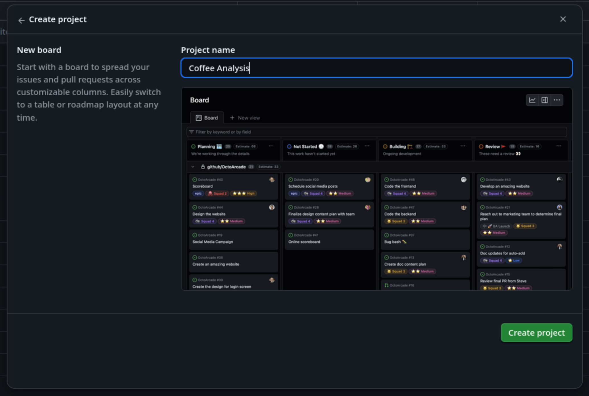

Content from Day 1: Landscape of approaches and undertaking an example project
Last updated on 2025-04-10 | Edit this page
Overview
Questions
- FIXME
Objectives
- FIXME
- FIXME
Content from 1.1 Welcome to the Course
Last updated on 2025-04-10 | Edit this page
Overview
Questions
- FIXME
Objectives
- FIXME
- FIXME
Content from 1.2 Software Development Process and the Landscape of Approaches
Last updated on 2025-07-31 | Edit this page
Overview
Questions
- What are the main stages in a typical software development process?
- What are waterfall, iterative, and V-Model approaches to software development?
- What is Agile and how does it compare to project management?
- How do software development models compare and relate to project management frameworks?
Objectives
- Highlight the main stages in a software development process
- Order and describe the stages within a typical software development process and how these apply within waterfall and iterative approaches
- Summarise the V-Model approach to software development
- Describe how software development models compare and relate to project management frameworks [AgilePM, PRINCE2]
The Stages of a Typical Software Development Process
Writing Code vs Engineering Software
Traditionally in academia, software and the process of writing it is often seen as a necessary but throwaway artefact in research. For example, there may be research questions for a given research project, code is created to answer those questions, the code is run over some data and analysed, and finally a publication is written based on those results. These steps are often taken informally.
The terms programming (or even coding) and software engineering are often used interchangeably. They are not. Programmers or coders tend to focus on one part of software development: implementation, more than any other. In academic research, often they are writing software for themselves, where they are their own stakeholders. And ideally, they write software from a design that fulfills a research goal to publish research papers.
Someone who is engineering software takes a wider view:
- The lifecycle of software: recognises that software development is a process that proceeds from understanding what is needed, to writing the software and using/releasing it, to what happens afterwards.
- Who will (or may) be involved: software is written for stakeholders. This may only be the researcher initially, but there is an understanding that others may become involved later (even if that is not evident yet). A good rule of thumb is to always assume that code will be read and used by others later on, which includes yourself!
- Software (or code) is an asset: software inherently contains value - for example, in terms of what it can do, the lessons learned throughout its development, and as an implementation of a research approach (i.e. a particular research algorithm, process, or technical approach).
- As an asset, it could be reused: again, it may not be evident initially that the software will have use beyond its initial purpose or project, but there is an assumption that the software - or even just a part of it - could be reused in the future.
Thinking about software engineering from that wider view, there are some typical stages that a software development project would go through and these are ver similar to the stages of any project.
Let’s Break it Down
Solo Challenge
Think about a project you’ve completed in the past. This could be a software project but it doesn’t have to be. It could be anything from organising an event to completing a personal goal or managing a work task.
If you were to break down that project into stages, what would the stages be?
Software Development Process
The typical stages of a software development process are:
- Requirements gathering: the process of identifying and recording the exact requirements for a software project before it begins. This helps maintain a clear direction throughout development, and sets clear targets for what the software needs to do.
- Design: where the requirements are translated into an overall design for the software. It covers what will be the basic software ‘components’ and how they will fit together, as well as the tools and technologies that will be used, which will together address the requirements identified in the first stage.
- Implementation: the software is developed according to the design, implementing the solution that meets the requirements set out in the requirements gathering stage.
- Testing: the software is tested with the intent to discover and rectify any defects, and also to ensure that the software meets its defined requirements, i.e. does it actually do what it should do reliably?
- Deployment: where the software is deployed or in some way released, and used for its intended purpose within its intended environment.
- Maintenance: where updates are made to the software to ensure it remains fit for purpose, which typically involves fixing any further discovered issues and evolving it to meet new or changing requirements.
These stages are followed implicitly or explicitly in every software project but there are many different ways to arrange them. The stages may be arranged according to an established model of software development.
Models of Software Development
Waterfall

The Waterfall Model is a software development methodology in which the typical stages of the software development process (that we outlined above) are followed step-by-step in a set, sequential order.
The Waterfall Model is effective when used for projects where the requirements are clearly defined from the outset. It is ideal for projects with long timelines and minimal tolerance for errors, where stakeholders require high confidence in the final outcome.
London’s Crossrail project (later rebranded as the Elizabeth Line) used a Waterfall approach of clear, sequential phases. This approach was appropriate because the requirements were known from the start, with little possibility for change throughout the project. The line spans 118km, serving 41 stations (10 new) and had been used for over 500 million journeys by early 2025 since its opening in 2022. Despite the project delays and overspend, the Elizabeth Line was widely praised as an engineering triumph.
However, there are some disadvantages to the Waterfall Model:
- The model is relatively inflexible. Once a phase is completed, the model does not account for going back to make changes and therefore there is no mechanism for error correction.
- The model assumes that project requirements are fully defined from the beginning, which is rarely the case for smaller, non-critical software projects, particularly in research.
- The software is not seen by the client until late in the project timeline, which may increase the risk of it not meeting the client’s expectations.
The myki ticketing system project in Melbourne, Australia, demonstrates some of the limitations of the Waterfall approach.
The myki ticketing system was designed to replace the Metcard system for Public Transport Victoria, improving the efficiency and reliability of public transport. Almost $1 billion was committed to this project in July 2005.
The project was expected to be completed in two years but ended up taking over nine years in total and the budgeted cost was exceeded by 55%. Furthermore, due to the rigidly fixed scope and upfront planning, the system could not adapt to evolving user expectations or new technologies. The system was plagued by multiple issues including overcharging, slow touch readers, top-up delays and limited device compatibility.
These issues were all symptomatic of the inflexible development process.
V-Model
The concept of the V-model was developed simultaneously, but independently, in Germany and in the United States in the late 1980s.
The V-Model emphasises the importance of validating each level of the software development. This approach ensures that verification (checking work during development) and validation (checking final products against requirements) are systematically integrated throughout the process.
The left side of the V includes creation and verification steps, i.e. does it work according to the specification.
Requirements gathering
System design
Architectural design
Module design
Coding
The right side of the V includes validation for each step, i.e. have you built the right thing
Unit testing (validation for module design)
Integration testing (validation for architectural design)
System testing (validation for system design)
User acceptance testing (validation for requirements gathering)

The V-Model is used in safety-critical, regulated industries where traceability, formal verification and compliance with standards are essential. These include:
Aerospace and defense
Automotive
Medical devices
Railways and transportation
The V‑Model is a mandated development framework in German federal and defense software projects.
This originated in the late 1980s with the Ministry of Defense and later extended to civilian administration.
Advantages
- Focus on quality through early and continuous testing
- The strong link between requirements and the final product improve the traceability of software changes.
Disadvantages
- Not flexible so struggles to deal with changing requirements
- Time-consuming due to extensive documentation and testing.
- No support for development activities to occur concurrently or to iterate.
The V-Model was used by Siemens Healthineers to develop their ultrasound systems Acuson SC2000 PRIME (from 2006) and Sequoia (from 2017).
The product had to be aligned with medical device regulations and so required the rigorous traceability that the V-Model enables.
Both projects used the V-Model alongside iterative approaches including Scrum.
Iterative
In many cases, it doesn’t make sense for software development to follow a linear process such as the Waterfall or V model for a number of reasons. For example:
- Changes to a design mean that the requirements must be adjusted
- A company may build on the same project for years, adding more complexity
- The design of a key algorithm may need changing, leading to a need to change the implementation
- A mistake is could be found during deployment which requires changes to the implementation
In iterative development, a large application is built in smaller, manageable parts called iterations. Each iteration includes planning, design, development, and testing, and produces a working version of the product. Unlike the Waterfall and V models, where the entire product is developed at once, iterative development adds features incrementally, with each cycle enhancing the functionality of the product.

The evolution of Google’s search engine exemplifies the principles of Agile development through continuous iteration and adaptation.
Rather than being developed in a rigid, one-time release, Google Search has undergone thousands of incremental improvements, including hundreds of algorithm updates annually.
Now handling at least 8.5 billion searches daily, Google’s sustained success is built on a foundation of iterative enhancements, frequent feedback integration, and rapid deployment.
Spiral Model
The Spiral Model, sometimes known as Boehm’s Spiral, is an iterative, risk-driven approach to software development. The approach allows for any mixture of software development approaches depending on the pattern of risk present in the project. The model guides users to first determine objectives, second identify and resolve risks, third develop and test, and fourth plan the next iteration. More recently, the spiral model has been thought of as a ‘process model generator’ because Boehm argues that choices based on a project’s risks generate an appropriate process model for the project.
Decisions about how much effort should be directed into each element of the project is guided by the goal of minimising the overall risk.

Agile
Agile software development is a phrase used to describe any iterative method which broadly follows a set of principles determined by a group of 17 software developers, called the Agile Alliance, at a meeting in Utah in 2001. These principles, outlined in the Manifesto for Agile Software Development, are as follows:
Individuals and interactions over processes and tools
Working software over comprehensive documentation
Customer collaboration over contract negotiation
Responding to change over following a plan
The Agile Manifesto was inspired by the desire for a more rapid and lightweight approach to software development, as an alternative to the more heavyweight processes such as Waterfall and V-Model. It drew on ideas from existing lightweight software development methods such as rapid application development, the rational unified process aka RUP, dynamic systems development method, scrum, extreme programming and feature driven development. Although these methods were developed in the 1990s, before the Agile Manifesto, they are now all referred to under the umbrella term ‘Agile’ and, with the exception of Scrum, these methods have now gone out of fashion.
Amazon embodies the Agile principle of customer collaboration through relentless feedback-driven iteration.
Amazon systematically gathers and acts on customer feedback to continually refine its products, and small, agile teams rapidly prototype and test ideas.
This Agile model has driven Amazon’s extensive expansion into e-commerce, cloud (AWS), smart devices, and subscription services.
Advantages of Iterative Development:
- Progress on the software product can initially be faster as less time is spent on the requirements and design stages before starting implementation
- Iterative approaches allow for continuous feedback, adaptation, and improvement throughout the project’s lifecycle.
- Defects can be found and corrected early, preventing them from affecting later stages.
- After each iteration, feedback can be gathered from users, allowing for adjustments and improvements to meet their expectations.
Disadvantages of Iterative Development:
- Without fully determined requirements and design, software can become messy or ‘hacky’ if quality control standards are not maintained
- Since not all requirements are defined from the start, unforeseen changes may arise during the development process which require revision of the software architecture, costing more time in the long run.
The UK’s Universal Credit welfare reform project demonstrates that estimating timings and delivery costs can be challenging when using an Agile delivery method.
The project was initially budgeted at £2.2 billion but is estimated to have cost £15-16 billion.
Originally due to complete by 2017, the project end date is now 2028.
Scrum
Scrum is one of the most popular Agile frameworks. Scrum is defined in the Scrum Guide as ‘a lightweight framework that helps people, teams and organisations generate value through adaptive solutions for complex problems’. The core philosophy of Scrum is to make incremental progress toward a goal through repeated iterations.
In Scrum:
A Product Backlog is created. This is a list of everything that needs to be done to build the product.
Work is done in Sprints, which are short blocks of time (< 1 month).
At the start of a Sprint, a subset of the Product Backlog is selected to be worked on during the Sprint. This is called the Sprint Backlog.
The developers work on tasks from the Sprint Backlog during the Sprint, creating an Increment of Value.
The Scrum Team and its stakeholders inspect the results and adjust for the next Sprint.
Repeat

Scrum Buzzwords Decoded
- Product Owner - responsible for maximising the value of the product.
- Product Backlog - Ordered list of what is needed to improve the product.
- Increment of Value - a concrete stepping stone toward the Product Goal.
- Scrum Team - one Scrum Master, one Product Owner, and Developers (we’ll discuss what each of these roles does later in the course).
- Sprint Backlog - the set of Product Backlog items selected for the Sprint.
- Sprint - Fixed-length events of one month or less in which the work gets done.
Later in this course we will talk more about Scrum so that you are able to use it to run your own Sprints on a project.
Which Model to Choose?
Any model can be used for any software development project. Waterfall and V-Model and more likely to be used when all the requirements are known at the start of the project. Iterative methods are particularly suited to prototyping, where quick development and user feedback help shape early versions of a system, and to research software, where evolving requirements and experimental objectives demand adaptability. However, iterative approaches can be used on any project including those which are large scale and safety critical.
It’s also worth noting that, to some extent, linear approaches become iterative in reality, as it is nearly always necessary to return to previous stages throughout the software development process. For example, knowing 100% of the requirements from the start is nearly always impossible. Even if a waterfall approach is applied, changes will most likely be made at each of the stages, requiring revision of an earlier stage.
Model Matchmaking: What’s the Best Fit?
Group Challenge
Imagine you’ve been hired to develop a web-based system for managing applications for public research grants. The portal will be used by applicants, reviewers and administrators.
The government has already defined detailed and fixed requirements.
There is no flexibility in the deadline, as it must go live before the start of the next fiscal year.
The system must be fully tested and reliable on day one, as errors could affect funding decisions.
Stakeholder involvement is minimal after the requirements have been approved.
Your task:
Discuss the project as a group and decide which software development model would be most suitable for delivering
Consider factors such as the nature of the project, clarity of requirements, timeline, risk, and the need for flexibility
Be prepared to justify your choice - why is this model a good fit for the scenario?
In this course, we will focus on Agile, as it is currently a commonly used method for software engineering across sectors, and it suits the project that you’ll be working on throughout this course. In particular, we will focus on a an Agile framework called ‘Scrum’.
Scrum vs Project Management
Scrum is an Agile delivery technique that guides the actual software development process. Scrum is concerned with delivering a project i.e. doing the actual software engineering.
Project management is concerned with all aspects of a project including planning, executing, and closing projects, as well as managing change and risk within a project. Project management may contain Scrum but will also cover the wider project aspects including ensuring that a project meets its goals, timeline, and budget.
There are lots of project management frameworks.
To avoid confusion we should distinguish between Scrum (an Agile delivery technique) and Agile Project Management (AgilePM), which involves the application of Agile principles to managing projects. AgilePM emphasises transparency, flexibility and meeting customer need, as well as allowing teams to have autonomy, make shared decisions and self-organise.
Another popular project management framework is PRINCE2 (PRojects IN Controlled Environments), which was developed by the UK government, and outlines seven principles, seven themes and seven processes to guide how a project should be managed. It is a more heavyweight project management framework than Agile Project Management and so is often used in sectors where governance and documentation are priorities.
Software Development or Project Management?
Group Challenge
Below is a list of tasks, discuss whether each task belongs in software development models or project management models:
- Writing and testing code for a new feature
- Designing the software architecture for a system
- Creating a risk mitigation plan for project delivery
- Allocating team members across multiple concurrent projects
- Refactoring legacy code to improve maintainability
- Tracking project progress against the Gantt chart
- Setting up a version control system (e.g. Git)
- Reviewing whether the project is on track to meet its deadline and budget
- Leading a daily stand-up meeting
- Leading a group retrospective to reflect on project outcomes and team performance
- Software development
- Software development
- Project management
- Project management
- Software development
- Project management
- Software development
- Project management
- Could be either
- Could be either
References
- Stages of Software Development from Python Intermediate Development Carpentries Training
- The Scrum Guide
- It’s Time to End the Battle Between Waterfall and Agile
- Software Engineering by Ian Sommerville
- Software Engineering: Theory and Practice by Shari Lawrence Pfleeger
- British Standards Online
- V-Model
- Waterfall Model
- Iterative ideas from Eastern Peak
- Agile
- PRINCE2
- The typical stages of a software development process are: requirements gathering, design, implementation, testing, deployment and maintenance
- These stages are arranged differently in different models of software development
- The Waterfall model follows the stages in a set, sequential order
- The V-Model emphasises the importance of testing and validation at each stage
- In iterative development, a large application is built in smaller, manageable parts called iterations.
- Boehm’s Spiral is an iterative, risk-driven approach to software development
- Agile software development is any iterative method that follows a set of Agile principles: Individuals and interactions over processes and tools; Working software over comprehensive documentation; Customer collaboration over contract negotiation; Responding to change over following a plan.
- Any model can be used for any software development project but some may suit particular types of projects better than others
- Scrum is one of the most popular Agile frameworks. Later in this course we will talk more about Scrum so that you are able to use it to run your own Sprints on a project.
- Software development is concerned with delivering a project whereas project management will also cover the wider project aspects.
Content from 1.3 User Stories and Capturing Project Requirements
Last updated on 2025-07-31 | Edit this page
Overview
Questions
- What types of requirements should be captured for a project?
- What is a non-functional requirement?
- How do I describe and ensure how desired features will provide value to the end user?
- How should I capture and manage requirements for change?
Objectives
- Describe the key features of writing user stories
- Highlight the characteristics and differences between functional and non-functional requirements
- Describe the purpose and composition of the product backlog
- Describe what makes a good product requirement
- Create an initial product backlog from a given scenario
In this section, we’ll introduce two established key concepts for capturing the needs of a project,
- User stories, which capture what is needed from solely the perspective of the client
- Requirements, which state what needs to be built (or what needs to change) by the development team
So whilst they both capture what the software will do, each reflects one side of the client/developer perspective.
User Stories: Understanding what is Needed from the User Perspective
Capturing “requirements” is pivotal to understanding what needs to be built, but whilst they state what is technically required, they lack the end-user context of what they are and why they are important. User stories aim to capture this perspective, being short and simple descriptions of new features or functionality from the perspective of the end user themselves. Therefore, user stories help:
- The project remains user-centered and focused on real needs, rather than jumping prematurely to solution or technical requirements
- To clarify the the value behind a feature, and anchor development in user outcomes, not just functionality
- Prevent requirements ballooning, if not guided by real user goals
- Prioritise what matters to users
They typically follow the following template, to ensure user stories are clear and concise:
As a [type of user], I want [an action] so that [benefit].
Breaking each of these three aspects down:
- “As a [type of user]”: who are we building this for? There may be more than one type of user, but in any case we need to think about this from the user’s perspective.
- “I want [an action]”: this describes the intent of this type of user, not the features of the system. What do they want to achieve?
- “so that [benefit]”: what is the benefit they are trying to realise? How will it help them directly, solve a problem for them?
Some examples of user stories include:
- E-commerce site: as a shopper, I want to add items to my cart so that I can purchase multiple products at once
- Mobile application: as a user, I want to receive push notifications for important updates so that I stay informed when I’m not using the app
FIXME: mention acceptance criteria for functional and non-functional requirements
Solo Exercise: User Stories
5 mins.
Consider this scenario:
“A small town cheese-making business has received many enquiries about being able to make online purchases delivered to their homes or place of business, and so now want to also sell their many types of cheeses using an online store. Online customers are looking to be able to search the store, select cheeses to purchase, and when ready, add payment and shipping details and confirm the order. There is some evidence that some online customers are environmentally and ecologically conscious, so are interested in the environmental impacts of products. In order to schedule their supply chains efficiently, business customers are keen to have updates on shipping. From the perspective of the business owner, they want to able to manage available stock inventory on the online store.”
Identify at least two types of user - also known as personas - that would use the store. From the above scenario, create at least four user stories using this format:
As a [type of user], I want [an action] so that [benefit].
Hint: focus on the user needs, not what may be implementated.
Here are some example user stories:
Business owner:
- As a business owner, I want to add new stock to the sit,e so that customers can purchase it.
- As a business owner, I want to remove old stock from the site, so that customers cannot purchase expired stock.
Personal customer:
- As a customer, I want to search available cheeses by name, so I can find the ones I want easily.
- As a customer, I want to add cheeses to a basket, so I can continue to shop and purchase them all later.
Eco-conscious customer:
- As an eco-conscious customer, I want to view the environmental impact details of products, so I can make environmentally-informed purchasing choices.
Business customer:
- As a business customer, I want to have real-time updates of orders that have been shipped, so I can organise my supply chains efficiently.
What Exactly is a Requirement, and Why are they Important?
In general, a requirement is a capability or condition that must be met for software to solve a problem or address a need. They form the foundation of our project and drive what will be developed, so if we do not properly explore and understand what is required, the software will not be suitable for it’s intended purpose.
Whilst user stories focus purely on the user perspective, requirements concentrate on what technically needs to change. For this reason, it’s common to develop user stories first (to understand the user), then from those stories, derive requirements (to understand what needs to be built). Requirements typically address technical aspects of software functionality and features that are needed to complete a user story, and are more numerous than the collection of user stories. Therefore, each user story is often addressed by more than one requirement.
There is repeated evidence that most errors aren’t actually introduced during the software development stage, but during requirements analysis and design. For example, one analysis of the software errors uncovered during integration and testing and the Voyager (1977) and Galileo (1989) probes discovered that 79% of these errors were due to a poor understanding of requirements.
However, it is unlikely that we will be able to determine all of the requirements correctly and completely upfront. In practice, very often requirements may need be flexible to some extent and may change as the project evolves, so we need to ensure we are able to accommodate any agreed changes.
Requirements are More than just Features
When considering software requirements, it is very tempting to just think about the features users need. However, many design choices in a software project depend on the users themselves and the environment in which the software is expected to run (as well as how the software should run), and these aspects should be considered as part of the software’s non-functional requirements.
To explore the importance of this aspect, let’s consider two software types, mobile applications and embedded software. They may appear similar, but examining the environments in which they are developed and operate uncovers many differences that need to be accounted for in order for the software to be fit for purpose.
| Concern | Mobile Apps | Embedded Software |
|---|---|---|
| Platform | Work on range of mobile hardware and iOS/Android operating systems | Exact specification of hardware is known - often not necessary to support multiple devices; typically low power |
| Development Language | Typically written in one of the higher-level platform preferred languages (e.g. Java, Kotlin, Swift) | Typically lower-level language (e.g. C) for better control of resources |
| Compilation | Users will not (usually) modify / compile the software | Users will not (usually) modify / compile the software |
| Installation | Usually distributed via a controlled app store | Usually distributed pre-installed on a physical device |
| Interface | Must have graphical interface suitable for a touch display | May have no user interface, or interface may be physical buttons |
| Documentation | Probably in the software itself or on a Web page | Documentation probably in a technical manual with a separate user manual |
| Uptime | May not run continuously due to restarts | May need to run continuously for the lifetime of the device |
Therefore, whilst a single piece of software may provide the same functionality on a mobile app or embedded device (for example, a photo frame application), the other non-functional considerations describe facets of how the software must be developed and how it must operate (often as constraints), and we must account for them in our requirements.
Solo Exercise: Types of Software
5 mins.
Think about some software you are familiar with (could be software you have written yourself or by someone else) and how the environment it is used in has affected its design or development. Here are some examples of questions you can use to get started:
- What environment does the software run in?
- How do people interact with it?
- What features of the software have been affected by these factors?
Some Examples
To get you thinking, consider the following examples:
Desktop Application
- Has a graphical interface for use with mouse and keyboard
- May need to work on multiple, very different operating systems
- May be intended for users to modify / compile themselves
- Should work on a wide range of hardware configurations
- Documentation probably either in a manual or in the software itself
Command-line Application - Linux Tool
- User interface is text based, probably via command-line arguments
- Intended to be modified / compiled by users - though most will choose not to
- Documentation has standard formats - also accessible from the command line
- Should be usable as part of a pipeline
Command-line Application - High Performance Computing
- Similar to a UNIX Tool
- Usually supports running across multiple networked machines simultaneously
- Usually operated via a scheduler - interface should be scriptable
- May need to run on a wide range of hardware (e.g. different CPU architectures)
- May need to process large amounts of data
- Often entirely or partially written in a lower-level language for performance (e.g. C, C++, Fortran)
Web Application
- Usually has components which run on server and components which run on the user’s device
- Graphical interface should usually support both Desktop and Mobile devices
- Client-side component should run on a range of browsers and operating systems
- Documentation probably part of the software itself
- Client-side component typically written in JavaScript
Class Exercise: What Classes of Non-functional Requirements Are There?
5 mins.
As a class, what types of non-functional requirements can you think of?
Some typical classes of non-functional categories include:
- Security: how do we ensure a user is authenticated and authorised to conduct a particular action?
- Performance: what performance goals will the software be required to satisfy?
- Usability: how will the user interact with the software?
- Reproducibility: how do we ensure others are able to reproduce results generated using the software?
- Portability: to what extent should the software be able to run on different systems with minimal changes?
- Maintainability: how easily can the software be modified, enhanced, or restructured?
- Reliability: to what extent should the software we able to operate without errors and unexpected failures?
- Availability: to what extent should the software remain accessible and operational when needed?
A more comprehensive list can be found on Wikipedia.
The Coffee Beans Analysis Project
For the remainder of the course, we’ll be making use of a hypothetical scenario for many exercises, where a fictional coffee company is looking for a small software company to do some software development and analysis for them on an existing dataset.
Details for this scenario are found in the Project Brief.
Solo Exercise: Develop User Stories
5 mins.
Read through the project brief linked above, and write down some user stories (no more than 6). The project is only concerned with the needs of the coffee company, so you only need to consider that as a single user type or persona.
Reminder of user story format:
As a [type of user], I want [an action] so that [benefit].
Some examples:
- As a coffee provider, I want to understand from which suppliers to source the best coffee beans, so that we maintain our artisanal reputation.
- As a coffee provider, I want to understand how many suppliers exist in each country, so that we can simplify our supplier chain.
- As a coffee provider, I want the resultant code to be reproducible and documented, so that I can regenerate results from previous analyses.
Group Exercise: Create a Product Repository
10 mins.
For this course each group will create it’s own GitHub software repository, based on another repository that contains the original client code that will be adapted.
First, select one member of the group to create the repository, who needs to:
- Go to https://github.com/softwaresaved/coffee-analysis on GitHub.
- Select the
Use this templatebutton on the right, and thenCreate a new repository. - On the following page, enter a suitable owner (such as yourself) and
the repository name (such as
coffee-analysis), and ensure the repository is public. Ordinarily in such circumstances, development would very likely be private, but for the purposes of training, select a public repository. - Select
Create repository
A new repository will be created, with the contents of the original repository included.
Secondly, each member of the group needs to be invited to collaborate on the repository, to ensure they have access. The individual who created the repository thus needs to:
- Select
Settingson the new repository page, then selectCollaborators(you may need to provide additional authentication for this step). - On the
Collaborators and teamspage, underManage access, selectAdd people. - In the pop-up box, you should be able to search for each group
member’s GitHub account by username, and select
Add to repositoryto send an invite. - Each new member will need to accept the invite, which is sent out by email.
- Ensure each member has the
Maintainpermission on the repository, which will allow them to push commits to the repository, and perform other non-destructive repository actions.
Capturing Requirements in a Product Backlog
A product backlog is a prioritised list of functionality that a product should contain; essentially, a list of work for the development team. It represents everything that might be needed in the product and is the single source of truth for all work. They include requirement-related aspects such as features, bugs, improvements, and non-functional requirements, but also any other supporting tasks such as any needed research (also known as spikes), and other implementation-related tasks (like cleaning up/refactoring code).
A product backlog is owned by the product owner (the client), and is dynamic, in that it evolves as the needs of the product evolves. Regular backlog refinement sessions throughout a project ensure items are updated, estimated, re-prioritised if necessary, and ready for upcoming sprints.
Using GitHub Issues to Manage Requirements
For a given repository, GitHub provides Issues - a framework for managing bug reports, feature requests, and lists of future work which is ideal for our needs.
Go back to the home page for your repository in GitHub, and click on
the Issues tab. You should see a page listing the open
issues on your repository - currently there should be none. The issues
we add here will form our product backlog.

The Issues aren’t Visible!
If you do not see the Issues tab, the repository owner
needs to enable it in the settings of the repository: go to the
Settings tab, scroll down to the Features
section, and activate the checkmark on Issues.
From the Issues tab you can create new issues by
selecting New Issue:
When you create an issue, you can add a range of details to them. They can be assigned to a specific developer for example - this can be a helpful way to know who, if anyone, is currently working to fix the issue, or a way to assign responsibility to someone to deal with it.
They can also be assigned a label. The labels available for issues can be customised, and given a colour, allowing you to see at a glance the state of your code’s issues. The default labels available in GitHub include:
-
bug- indicates an unexpected problem or unintended behavior -
documentation- indicates a need for improvements or additions to documentation -
duplicate- indicates similar or already reported issues, pull requests, or discussions -
enhancement- indicates new feature requests, or if they are created by a developer, indicate planned new features -
good first issue- indicates a good issue for first-time contributors -
help wanted- indicates that a maintainer wants help on an issue or pull request -
invalid- indicates that an issue, pull request, or discussion is no longer relevant -
question- indicates that an issue, pull request, or discussion needs more information -
wontfix- indicates that work will not continue on an issue, pull request, or discussion
Adding New Issue Labels
Many of these label types are useful, but what if we need to add new labels?
If we go to our Issues tab, then select
Labels next to the search box, we should see a list of
existing issue labels:

By selecting New label, we specify a new label name,
description, and even a new label colour, before selecting
Create label.
Add our Coffee Analysis Requirements to a Product Backlog
Class Exercise: What Makes a Good Requirement?
5 mins.
As a class, discuss which characteristics make a good requirement.
In general, a good requirement is:
- Clear and concise - there shouldn’t be any confusion regarding its interpretation
- Valuable - is relevant to the project by addressing a user need
- Singular in scope - articulating a single need or quality attribute
- Actionable - is sufficiently concrete and detailed enough to be implementable
- Attainable - is realistic enough in scope to be achieved within a reasonable timeframe
- Verifiable/testable - any solution that addresses the requirement can be verified to satisfy that requirement
Group Exercise: Create a Product Backlog
15 mins.
As a group, examine the project brief and identify (perhaps around 10-15) key requirements for the project, and add these as new issues to our product backlog in GitHub, assigning an appropriate label to classify the type of issue.
For our purposes it would be good to label some issues as a new
feature as well (as opposed to an enhancement
of existing code), so add this as a new type of label and use that where
appropriate.
Be sure to add a suitable (and concise) description for the issue.
- User Stories help to understand project needs from the perspective of the client
- User Stories follow the format
As a [type of user], I want [an action] so that [benefit] - Clear and well understood requirements are fundamental to a successful project
- Evidence that most project errors are introduced during the handling of requirements
- Requirements will change over time, and we need to allow and manage for that
- Requirements are more than just features: non-functional requirements capture the environment and how and in what way the software should operate and be provided
- A product backlog is a prioritised list of desired product functionality owned by the product owner (typically the client)
Content from 1.4 Estimation, Prioritisation, and Stakeholder Management
Last updated on 2025-08-11 | Edit this page
Overview
Questions
- How should I estimate how long fulfilling a requirement will take?
- How should I prioritise requirements?
- What methods help to clarify requirements with stakeholders?
Objectives
- Create a GitHub Project Board to manage issues
- Add backlog items to the Project Board
- Describe the key principles and approaches to estimation
- Apply MoSCoW internally to initially prioritise items in a product backlog
Managing Issues in GitHub
Managing our issues as presented in the Issues page is
helpful as a view to everything that’s being done, but it gives a
relative flat representation of tasks and it’s not straightforward to
determine, at a glance, the overall status of a project. In
particular:
- What’s still to do
- What’s currently in progress
- What’s been completed
This is particularly the case when we have many issues for a given project, and more than one person working on them.
In an agile Scrum sense, if we’re currently in a sprint (or preparing for one in a sprint planning session) it would be beneficial to have a way to visualise and manage this information efficiently. GitHub does provide Milestones as an organisational mechanism, where we are able to group issues together in logical lists, but this approach also has similar limitations at scale. In addition, a key technique in agile approaches is frequent prioritisation, and that’s difficult to do without a higher-level approach.
GitHub Projects
GitHub Projects enable ways of organising issues into smaller “sub-projects” (i.e. smaller than the “project” represented by the whole repository). Projects provide a way of visualising and organising work which is not time-bound and is on a higher level, which makes management easier.
Milestones are typically used to organise lower-level tasks that have deadlines and progress of which needs to be closely tracked (e.g. release and version management). The main difference is that Milestones are a repository-level feature (i.e. they belong and are managed from a single repository), whereas projects are account-level, and can manage tasks across many repositories under the same user or organisational account. This is particularly useful for larger projects with development across multiple repositories (for example, with client-side code in one repository and server-side code in another). This enables the development team to manage issues on these repositories under a single project board, if desired.
Conceptually, for our purposes a GitHub Project is a “project board”, which originated as a tool used by Toyota in the 1940s called the “Kanban” system. Kanban-style boards consists of columns and cards to keep track of tasks. You break down your project into smaller sub-projects, which in turn are split into tasks which you write on cards, then move the cards between columns that describe the status of each task. Cards are usually small, descriptive and self-contained tasks that build on each other. Breaking a project down into clearly-defined tasks makes it a lot easier to manage.
In GitHub, a project board adopts this Kanban-style, with entries on the board either being:
- Cards - a short note which belongs only to the Project Board
- Issues - essentially GitHub issues imported from a repository (or many repositories)
As well as a Kanban-style boards, GitHub Projects also supports other types of view too, including roadmap views, table-based views, or as a spreadsheet. For the purposes of this training, we’ll use the boards view.
Creating a Board for our Project
Group Exercise: Create a Project Board
5 mins.
To use a project board in GitHub, it needs to be created and shared with the rest of the group.
Firstly, select one of the team to create the board, who will:
- On the group repository’s main page, select
Projects, thenNew Project.
- In the
Create Projectpop-up window, we are presented with some styles to choose from:Table,BoardandRoadmap. SelectBoard. - Decide and enter a name for the board,
Coffee Analysisfor example: 
Similarly to how the repository was shared with the rest of the group, the project board also needs to be shared:
- Select the
...in the top right and select `Settings:
- Select
Manage accessfrom the navigation bar on the left. - Under
Invite collaborators, add each member of the group by adding their username. - Set each member’s permissions under
Manage accesstoWriteorAdminso they are able to make changes to the board.
Once created, you should see the default layout for a GitHub board,
with three columns: Todo, In Progress, and
Done, into which we import repository issues, and manage
them.

Adapting our Board Columns…
You can add or remove columns from your project board to suit your
use case. One commonly seen extra column is On hold or
Waiting. If you have tasks that get held up by waiting on
other people (e.g. to respond to your questions) then moving them to a
separate column makes their current state clearer.
Importing Issues
In order to manage our repository’s issues, we need to first add them to our board.
If you select + Add item at the bottom of the
Todo column, you’ll be able to enter some text. If you
continue to add arbitrary text, this will create a board card, but
instead, we want to add issues from our repository. To do this, type
# followed by your repository name,
e.g. #coffee-analysis.

This will present a short list of repositories that match that name (hopefully just the one!). Select the repository and you should see a list of issues appear from which you are able to select to add to the board (although don’t do this just yet!)
Group Exercise: Add our Project Backlog Issues to the Board
5 mins.
In your groups each add at least one repository issue to the
Todo column in the project board until they have all been
added. Ensure that everyone gets a chance to add at least one issue!
You may see that the added issues don’t display their labels by default. This is particularly useful, so to do that:
- Select the drop down next to
View 1(a down pointing arrow) - Select
Fields, then selectLabelsfrom theHidden fields - Select
Saveon the pop=up that appears

The assigned labels for each issue should now be visible.
Estimation: the Foundation for Prioritisation
Once we have an initial set of requirements captured, we need to understand their importance in relation to each other: essentially we need to prioritise them.
But before we can prioritise our requirements, there are some things we need to find out.
Firstly, we need to know:
- The period of time we have to resolve these requirements - e.g. before the next software release, pivotal demonstration, or other deadlines requiring their completion. This is known as a timebox. This might be a week or two, but for agile, this should not be longer than a month. Longer deadlines with more complex requirements may be split into a number of timeboxes.
- How much overall effort we have available - i.e. who will be involved and how much of their time we will have during this period.
We also need estimates for how long each requirement will take to resolve, since it’s difficult to meaningfully prioritise requirements without knowing what the effort tradeoffs will be. Even if we know how important each requirement is, how would we even know if completing the project is possible? Or if we do not know how long it will take to deliver those requirements we deem to be critical to the success of a project, how can we know if we can include other less important ones?
It is often not the reality in practice, but estimation should ideally be done by the people likely to do the actual work: the developers themselves. It shouldn’t be done by project managers or those otherwise not involved in development, simply because they are not best placed to estimate, and those doing the work are the ones who are effectively committing to these figures. As well as lacking the inherent technical skills required to estimate, having senior non-development roles dictating estimates is that they are at risk of non-development biases such as idealised project timelines and goals which may not be achievable.
T-Shirt Estimation
One method typically used in agile for estimation is t-shirt estimation. Instead of applying specific estimates of time to complete each requirement or task, you instead assign a t-shirt size to each in order to estimate their size relative to each other. T-shirt estimation is a far simpler method that emphasises simplicity, speed, and collaboration in early stages of a project where details are often vague.
Some example sizes might be:
| Size | Description | Rough time estimate |
|---|---|---|
| XS | Very quick and easy | < 1 day |
| S | Small effort | 1-2 days |
| M | Medium effort | 2-4 days |
| L | Large effort | 5-7 days |
| XL | Very large or unclear | - |
So for any tasks judged to be XL, this implies it needs
to be clarified and/or broken down into further tasks.
Solo Exercise: Apply T-shirt Estimates to your Product Backlog
5 mins.
On your own, quickly apply the t-shirt estimation technique to the issues in your product backlog, noting down your estimates. Use the following categories, which have a greatly reduced time scale:
| Size | Description | Rough time estimate |
|---|---|---|
| XS | Very quick and easy | < 10 mins |
| S | Small effort | 10-30 mins |
| M | Medium effort | 1-2 hours |
| L | Large effort | 2-5 hours |
| XL | Very large or unclear | - |
An effective way of helping to make your estimates more accurate is to do it as a team. Other members can ask prudent questions that may not have been considered, and bring in other sanity checks and their own development experience. Just talking things through can help uncover other complexities and pitfalls, and raise crucial questions to clarify ambiguities.
Group Exercise: Collate your Estimates!
5 mins.
As a group, reveal your individual estimates for each requirement - which may be wildly different! - and decide the final size based on the majority size. For those that have equal votes, decide quickly as a group on the final size.
Have one member lead the discussion for a requirement, and rotate this role until all requirement estimates have been decided, such that every member leads the discussion at least once.
Once you have a list of final sizes, add each agreed size as a comment to its corresponding issue in your product backlog.
Why is it so Difficult to Estimate?
Estimation is a very valuable skill to learn, and one that is often difficult. Lack of experience in estimation can play a part, but a number of psychological causes can also contribute. One of these is Dunning-Kruger, a type of cognitive bias in which people tend to overestimate their abilities, whilst in opposition to this is imposter syndrome, where due to a lack of confidence people underestimate their abilities. The key message here is to be honest about what you can do, and find out as much information that is reasonably appropriate before arriving at an estimate.
More experience in estimation will also help to reduce these effects. So keep estimating!
General Tips for a Successful Estimation Session
- Avoid mapping sizes to exact hours/days too early
- Focus on relative sizing between stories
- Discuss outliers - why does someone see it as an XL when others see M?
- Use the discussion to uncover unknowns or assumptions about the requirements, and clarify them in the product backlog
To an extent, the process of deciding estimates is more important than the actual result of estimation. Creating estimates forces the team to consider the detail of what will be required to fulfil a requirement, beyond just coming up with a number. For example, when coming up with an estimate it may become clear there are unrealised dependencies between tasks, or some requirements are not readily estimable due to being too complex or too widely scoped, and require further decomposition into multiple smaller requirements to estimate properly. It may also become clear that some requirements may not be achievable at all within the timeframe of the project!
Prioritisation
Now we have our estimates we can decide how important each requirement is to the success of the project. This should be decided by the project stakeholders; those - or their representatives - who have a stake in the success of the project and are either directly affected or affected by the project, e.g. clients, end-users, collaborators, etc.
To prioritise these requirements we can use a method called MoSCoW, a way to reach a common understanding with stakeholders on the importance of successfully delivering each requirement for a timebox. MoSCoW is an acronym that stands for Must have, Should have, Could have, and Won’t have. Each requirement is discussed by the stakeholder group and falls into one of these categories:
- Must Have (MH) - these requirements are critical to the current timebox for it to succeed. Even the inability to deliver just one of these would cause the project to be considered a failure.
- Should Have (SH) - these are important requirements but not necessary for delivery in the timebox. They may be as important as Must Haves, but there may be other ways to achieve them or perhaps they can be held back for a future development timebox.
- Could Have (CH) - these are desirable but not necessary, and each of these will be included in this timebox if it can be achieved.
- Won’t Have (WH) - these are agreed to be out of scope, perhaps because they are the least important or not critical for this phase of development.
In typical use, the ratio to aim for of requirements to the MH/SH/CH categories is 60%/20%/20% for a particular timebox. Importantly, the division is by the requirement estimates, not by number of requirements, so 60% means 60% of the overall estimated effort for requirements are Must Haves.
Why is this important? Because it gives you a unique degree of control of your project for each time period. It awards you 40% of flexibility with allocating your effort depending on what’s critical and how things progress. This effectively forces a tradeoff between the effort available and critical objectives, maintaining a significant safety margin. The idea is that as a project progresses, even if it becomes clear that you are only able to deliver the Must Haves for a particular time period, you have still delivered it successfully.
Group Exercise: Prioritise our Product Backlog
15 mins.
In this exercise you’ll be prioritising the issues/backlog items according to a MoSCoW approach.
Firstly, have someone in the group add some additional custom labels to the repository, one each for the MoSCoW classifications, e.g.:
-
MHforMust Have -
SHforShould Have -
CHforCould Have -
WHforWon't Have
Once added, as a group, go through each the backlog items and taking
into account the time estimates for each, decide what level of priority
to assign to them. Try to assign a 60%/20%/20% balance of
MH/SH/CH across the issues. For
the purposes of this training exercise, assume there is only a total of
7 hours available for the project (which may mean, depending on your
estimates, that some things won’t make the cut!)
(If time) Group Demonstration Exercise
10 mins.
Firstly, as a group:
- Nominate one person (or many!) to briefly demonstrate their product backlog board to the class
- Nominate one person to take short notes of the discussion
For 5 minutes, briefly discuss what to present in a maximum about 2 minutes, in terms of the chosen layout of the board, key findings, usefulness, and challenges of developing your issues and boards. A list of very short key points is fine!
Each group presents to the class for 2 minutes each.
- GitHub Projects provide project boards to organise issues and visualise the status of a project in terms of its requirements
- Kanban boards consists of columns (which represent statuses) and cards (which represent tasks), which are moveable between columns
- GitHub Project Boards are owned by the creating user or organisation, and not any particular repository
- GitHub Boards can contain either board-specific cards, or issues imported from GitHub repositories
- Estimation is a foundation for prioritisation
- T-shirt estimation is a technique employed early in a project that assigns a t-shirt size to each task in order to estimate their size relative to each other
- MoSCoW prioritisation classifies requirements either as Must Have (MH), Should Have (SH), Could Have (CH) or Won’t Have (WH)
- Using a 60%/20%/20% effort ratio of MH/SH/CH ensures a 40% safety margin of effort for a project
Content from 1.5 Working with Clients
Last updated on 2025-07-31 | Edit this page
Overview
Questions
- How can I communicate technical ideas clearly to non-technical clients?
- What should I do when the client’s needs or requests are vague or unclear?
- How do I help the client decide what features to prioritise?
- How do I manage client expectations around time, budget, and quality?
- What makes a good client kickoff meeting, and how should I lead it?
- What should be included in an agenda for a kickoff meeting?
Objectives
- Collaborate with clients to refine and prioritise product backlog items.
- Develop a focused, outcome-driven agenda for a client meeting.
- Conduct a productive and professional client kickoff meeting.
- Apply communication and negotiation techniques in a technical context.
Communicating with Clients
One of the most important skills for a software engineer working in industry is the ability to communicate effectively with clients.
Clear communication builds trust, prevents expensive misunderstandings, and ensures that the business goals and technical implementation are aligned.
While this course is focused on software engineering, the points that we’ll cover can be applied to any project.
Speaking the Same Language
Scenario: You’re in a meeting with a client and explain, “We’re planning to refactor the backend and upgrade the framework so we can implement the auth flow asynchronously. That should make deployments cleaner.” The client nods politely but later admits they didn’t understand a word. They leave the meeting unclear on what’s being done, why it’s needed, or how it affects their goals.
This kind of miscommunication is surprisingly common. It stems from the Expert Awareness Gap (also known as the Curse of Knowledge), a disconnect between experts and non-experts, where the expert unintentionally assumes that others share their knowledge, context, or mental models, when they do not. This is because experts internalise concepts so deeply that they become automatic and invisible to them. In this context, software engineers may assume non-technical stakeholders share their understanding of technical concepts that have become second nature. As a result, clients may feel confused, excluded, or unsure how to make informed decisions.

To bridge this gap, and build shared understanding, try the following techniques:
Use analogies or plain language.
For example, instead of saying “we’re refactoring the code,” try “we’re tidying up the code to make it easier and safer to change in the future.”Expand acronyms even if they seem obvious.
Don’t assume clients know what CI/CD (Continuous Integration / Continuous Deployment), API (Application Programming Interface), or JWT (JSON Web Token) mean. A good rule is to expand any acronym at least the first time you use it.Connect technical changes to client value.
For instance, rather than saying “we’re upgrading the framework,” say “we’re upgrading the framework to reduce bugs and give us access to modern features that improve security and performance.”Frame decisions in terms of the client’s goals.
When discussing trade-offs, explain how technical choices affect things like user experience, compliance, or costs.Use visuals to support understanding.
Diagrams, such as flowcharts, can help convey complex ideas without relying on jargon.
By learning to speak the client’s language you build their trust, enable better decision making, and avoid frustration on both sides.
Pair Challenge: Explain a Technical Topic
(7 minutes)
Practice overcoming the expert awareness gap by explaining a familiar topic clearly to someone with no background in it.
Individually, think of a topic that you know a lot about. For example, it could be the subject of your research, a programming language or framework that you’ve used extensively, or a hobby or skill that you have a lot of experience with (e.g. playing the clarinet, wild swimming, golf).
Check with your partner that they know little or nothing about this topic.
Take two minutes each to explain your topic to your partner as if they have no prior knowledge.
After listening, the partner should ask questions to clarify anything they don’t understand.
Swap roles and repeat the exercise so both of you get a chance to explain and to listen.
Setting Realistic Expectations
Scenario: In a client meeting, a developer says, “Yes, we should be able to add that feature by the end of the sprint.” The client is pleased. However, a week later, it becomes clear that the feature is more complex than expected, other tasks are behind schedule, and the team now has to explain the delay. The client feels frustrated and blindsided and this impacts the trust they have in your development team.
This is a classic example of unrealistic expectations, often caused by optimism, pressure to please, or fear of disappointing the client in the moment.
Setting realistic expectations is one of the most important parts of client communication. It helps prevent misunderstandings, reduces stress, and builds long-term trust.

Under-promise, over-deliver
Clients would rather be pleasantly surprised than disappointed. Estimate conservatively, it’s better to deliver something early or with extra polish than to miss a deadline.Build in contingency time
Always allow for the unexpected. Think carefully about what could go wrong (technical complexity, team availability, integration issues), and factor that into your estimates.Avoid committing on the spot
Don’t feel pressured to promise something immediately. It’s entirely professional to say:
“Let me check with the team and get back to you this afternoon.”Be honest about trade-offs and limitations
For example:
“We can deliver this in two weeks, but without automated testing. If you want it tested properly, we’ll need an extra week.”
Watch Out for Scope Creep

Scope creep, also known as requirement creep, happens when new features or changes are added during the project without adjusting time or budget. If this isn’t managed, it can derail progress and increase risk.
Help clients make informed decisions by explaining:
The Project Management Triangle
You can have two of the following:
Fast, Cheap, or Good - but rarely all three at once.Impact of changes
Rather than saying “That’s not possible,” present options:
“We can do X by Friday, or Y by next week. What’s more important to you?”Cost of adding features
Be clear about how additional features may delay delivery, increase complexity, or reduce testing time.Stay neutral and solution-focused
Avoid blame or emotional language. Stick to the facts and guide clients toward trade-offs based on their priorities.
By setting realistic expectations from the start, you’re managing risk, building your client’s confidence in your team and keeping the project on track.
Group Challenge: Responding to Scope Creep
(10 minutes)
Your team has already agreed with the client on the project’s scope and timeline. You’re midway through the first sprint when the client sends an email saying:
“We’ve been thinking, and we’d really like to add a feature that allows users to share their progress with friends. Can we fit that in before the demo next week?”
This new feature was not in the original backlog and has design, development, and testing implications.
Discuss your response to the client, using the principles outlined above, and then draft a short email that:
- Acknowledges the client’s request positively and professionally;
- Explains the impact of the new feature on timeline, scope and/or risk;
- Presents options (e.g. delay another feature, extend the deadline, or push the feature to the next iteration);
Tracking Velocity
In this context, velocity describes the amount of work that a team delivers in a set period.
You would track how many tasks your team has completed in previous Sprints and use this as a baseline for how many tasks of a similar size can be completed in the current sprint. This gives you an evidence-based approach to expectation setting.
Tracking velocity can help you to set realistic timelines based on what your team has actually delivered in the past. It can also help you to build trust with the client through transparency and predictability.
Timeboxing
Timeboxing is where you allocate a fixed amount of time to an issue and stop when that time is up, regardless of whether the issue has been resolved. Timeboxing can be useful when the work is exploratory or uncertain because it:
- makes transparent to the client how much time is being allocated to learning or discovery, which may not be clear from observable progress on the product.
- helps avoid analysis paralysis (getting stuck on one issue indefinitely)
- controls the risk when the outcome is uncertain
For example: “Since we’re not yet sure how complex this integration is, we’ll allocate 2 days to investigate. We’ll regroup after that to decide the next steps based on what we learn.”
Sprints are a example of timeboxing. You might also timebox a product backlog item within a Sprint.
Discussing Prioritisation
Scenario: A client approaches your team with a vision for a meal-planning app. They want grocery shopping integration, dietary preference tracking, AI-generated recipes, video tutorials, and a sleek mobile interface, all delivered within eight weeks. You explain that the scope is too large for the timeline, but the client insists each feature is essential. Without clear prioritisation, the team attempts to build everything and ends up delivering an unstable app that fails to meet user expectations. The client is disappointed, and trust is damaged.
This kind of situation is common. Clients are often enthusiastic and ambitious, but may not understand the trade-offs involved. That’s why clear prioritisation discussions are essential.
Why Prioritisation Matters
There’s rarely enough time or budget to build every requested feature. Prioritisation helps focus resources on what truly matters, ensuring that:
- The product can launch on time.
- Key user needs are met early.
- The team can iterate and improve based on real feedback.
Introducing the concept of the Minimum Viable Product (MVP) can help clients shift from “everything now” to “what’s essential first.”
The MVP: A Strategic Starting Point
The MVP is a basic, working version of the product that delivers the product’s core value. It’s not the final product, but it’s enough to test with users and validate the idea.
For instance, imagine that the client wants you to build a car. The core value is a structure with wheels that can get you from A to B, so the MVP might be a skateboard.

Tools for Prioritisation: MoSCoW
Use the MoSCoW method to help clients classify features:
- Must haves – Essential for the product to function.
- Should haves – Important, but not critical for launch.
- Could haves – Desirable extras, only if time allows.
- Won’t haves (for now) – Deferred until a later phase.
This framework encourages honest, collaborative conversations about what really matters, and helps avoid overcommitting.
Facilitating Prioritisation
- Use visuals (roadmaps, feature lists) to support the discussion.
- Frame prioritisation in terms of client goals: “Which features will help you learn the most from your first users?”
- Be prepared to explain technical dependencies (e.g. why Feature A must come before Feature B).
- Remind clients that starting small doesn’t mean thinking small - a more complex product can be built on top of the MVP but only when the bare essentials are in place.
By leading productive prioritisation conversations, you help clients make better decisions, reduce risk, and increase the likelihood of a successful product launch.
Solo Challenge: From Product Vision to MVP
(5 minutes)
Your client wants to launch a DIY pizza kit delivered to customers’ homes. The big vision includes:
- Artisan dough, sauce, and toppings
- Vegan and gluten-free options
- A recipe booklet with tips and tricks
- Fancy packaging and branding
- App integration with cooking videos
- Optional dessert add-ons
- Custom topping selections
- Subscription bundles
But:
They have a tight budget and want to test the idea in the first month with a basic version.
Your task is to develop their MVP: What’s the simplest product they can launch that still gives customers the core experience of “making your own pizza at home”?
List the components that should be included in the MVP version of the DIY pizza kit.
Reaching Clarity

Scenario: During a planning meeting, a client tells the team: “We want the site to feel modern and fast.” No one asks for clarification. The designers choose a sleek, minimal style with bold colours, and the developers focus on performance optimisations to reduce load times to under 500ms. However, at the next review, the client is unhappy. By “modern,” they actually meant visually similar to Apple’s aesthetic. And by “fast,” they didn’t mean technical speed, but a user journey with fewer steps. The team now need to rework major parts of the product, wasting both time and budget.
Why Reaching Clarity Matters
Small misunderstandings can grow into major issues if left unchecked. Assumptions on either side can lead to missed expectations, rework, and a loss of client trust. It’s far better to pause and ask than to move forward on unclear instructions.
Methods for Improving Clarity
Ask for specifics when things are vague
Use follow-up questions to make abstract requests concrete.
For example:
“When you say ‘fast’, do you mean page loads under 1 second, or fewer clicks to reach key information?”Probe when clients say, “use your judgement”
If the client doesn’t know exactly what they want, try asking:
“What don’t you want?” or
“Can you show me an example of something you like or something you don’t like?”Summarise and confirm
Restate what you’ve heard to confirm your understanding.
Example:
“So just to confirm, you’d like the dashboard to show data from the last 7 days by default?”Document everything clearly
Use written follow-ups like email recaps or meeting notes to reinforce shared understanding. These also create a useful reference point.Admit when you’re unsure
It’s okay to say:
“I’m not sure I follow, please could you walk me through an example?”
Honesty prevents costly mistakes later.
Group Challenge: There’s No Such Thing as a Silly Question
(15 minutes)
Re-read the project brief for the coffee beans project.
First, individually, take a few minutes to think about what is unclear to you in the project brief and formulate a list of questions for the client.
Then, discuss your questions as a group and form a combined list of all your questions.
Designing a Kickoff Meeting
Objectives of a Kickoff Meeting
The three key objectives of a kickoff meeting are:
- Agree prioritised requirements: Work with the client to review and prioritise the product backlog. While the final decision rests with the client, prioritisation should be a two-way conversation. Developers should feel confident advocating for items they believe are critical, especially technical tasks that may not appear important to non-technical stakeholders but are essential for enabling future features or maintaining system stability.
- Set expectations: Establish a shared understanding of what will be delivered, when, and to what standard. This includes clarifying timelines, defining the scope of work for early iterations (such as the MVP), and agreeing on communication channels and response times. Setting clear expectations upfront helps reduce misunderstandings and prevents scope creep later in the project.
- Resolve ambiguity: Clarify any unclear or vague requirements before development begins. This may involve asking the client to define specific terms, provide examples, or explain business rules in detail. The goal is to remove guesswork and ensure that both the development team and the client share the same understanding of what is being built and why.
Anatomy of an Agenda

Every good meeting should have an agenda which maps out the key points that the meeting should cover. A well-structured agenda helps to keep the meeting focused, efficient and productive. An agenda for a kickoff meeting would usually include the following elements:
Introductions & context
- Introduce all participants of the meeting, including their roles and responsibilities.
- Briefly explain why this project is happening.
- Allow the client to describe the problem from their perspective.
- Establish an open and collaborative atmosphere.
Clarification of Brief and Identification of Gaps
Use your list of questions for the client in this section of the meeting
- Review the brief provided by the client.
- Confirm working definitions of any technical language i.e. make sure that any technical language means the same thing to the client and the whole team.
- Highlight areas where the brief is vague, conflicting, or incomplete.
- Ask follow-up questions to understand goals, constraints and assumptions.
- Identify dependencies, risks, or areas where the team needs more detail.
- Record all unanswered questions and agree who will follow up with answers.
Prioritisation and MVP Discussion
- Help the client decide which features are essential for launch and which can wait.
- Use techniques such as MoSCoW to prioritise backlog items.
- Introduce the concept of a minimum viable product if necessary.
Expectations and Timelines
- Agree what will be delivered (after Sprint 1 and in the final presentation).
- Agree on the format of the product you will deliver.
- Discuss delivery phases or sprints and milestone dates (In this case you have two sprints, each about 3 hours in length, and the delivery is on day 5).
Note: Be conservative in time estimates to allow for unforeseen delays.
Summary of decisions
- Recap all major decisions (e.g., MVP scope, timelines).
- Review any open questions and note who will investigate and provide answers, and by when.
- Clarify how and when a summary of this meeting will be shared (e.g., post-meeting email, shared document).
- End the meeting by inviting final questions or concerns and confirming that the client is happy and confident about the plan.
Group Challenge: Agenda Assembly
(15 minutes)
Create an agenda for a 30 minute kickoff meeting with the client for the Coffee Beans Analysis project.
The agenda should take the form of either a bullet list or a table.
Use the structure above to develop your agenda ensuring it:
- is logically structured.
- each section has a rough timing assigned to it.
- includes key questions or talking points under each section.
- is appropriate for use with a non-technical client.
Chairing the Meeting

In a client meeting, the software development team (the supplier) should take responsibility for leading the meeting. As an analogy, when an electrician comes to your house, they don’t expect you to explain wiring protocols, instead they ask questions to diagnose the problem and recommend solutions. Similarly, the development team should guide the meeting to get the clarity they need to do their job.
- Nominate one person to chair the meeting, it’s their job to ensure that the meeting stays on track and follows the agenda. The rest of the group can add questions or comments but it’s more straightforward if there is a single person leading the meeting.
- Make sure you get the information you need from the meeting. Don’t assume that the client will volunteer all necessary information - you may need to draw it out of them through asking lots of questions.
- Clients often don’t know what’s important to developers. They may focus on the appearance of the product or general ideas rather than technical details. It’s your job to lead the discussion towards finding the details you need. You could use diagrams, examples, or “what-if” scenarios to help clients think through their needs.
Meeting Notes
Meeting notes are a vital output from any client meeting. They protect against miscommunication, enable follow-up, and support future planning.
Meeting notes should capture:
- Decisions: What was agreed in the meeting.
- Ambiguity: Any areas that are still unclear and/or any open questions.
- Actions: Who is doing what and by when. Include actions on the software development team and on the client.
It’s helpful to take notes in a shared document (e.g., google doc) that everyone can access. This way, if any updates are made, everyone can see them straight away.
Send a summary email containing the meeting notes within 24 hours of the meeting to confirm that everyone is on the same page.
It can be helpful to use consistent formating across meetings for clarity (e.g., bullet points or a table).
Group Challenge: Client Meeting
(30 minutes)
You have a 30 minute meeting with the owner of the coffee company.
Choose a chair for your meeting and someone to be in charge of note taking.
Conduct the kickoff meeting for the project according to the agenda you produced earlier. Make sure you get answers to all your questions and agree the priorities for the project with the client.
Remember to send the client the meeting notes afterwards.
Group Challenge: Refine the Product Backlog
(15 minutes)
Refine your product backlog following the client meeting.
Add or edit any product backlog items and adjust the priorities according to the prioritisation you agreed with the client.
References
- IEEE Software Engineering Body of Knowledge (SWEBOK), “Software Engineering Professional Practice”
- Minimum viable product wikipedia
- The Decision Lab - The Curse of Knowledge
- Dev - How to underpromise and underdeliver
- Scope creep wikipedia
- Avoid jargon by translating technical concepts into plain, client-friendly language.
- Clarify vague requests by asking follow-up questions and confirming understanding.
- Use the concept of a Minimum Viable Product to help clients focus on the core of their product.
- Set expectations realistically by under-promising and including contingency time.
- Be transparent about limitations and clearly explain the impact of technical decisions.
- Manage scope creep by showing how new requests affect cost, time, or quality.
- Take the lead in client meetings to ensure key information is gathered.
- Use a clear agenda to guide productive and structured client discussions.
- Record and share meeting notes to capture decisions, questions, and action points.
Content from Day 2: Technical Skills and Best Practices within an Agile Way of Working
Last updated on 2025-04-10 | Edit this page
Overview
Questions
- FIXME
Objectives
- FIXME
- FIXME
Content from 2.1 Collaborative Workflow: Branches and Merging Strategies
Last updated on 2025-08-01 | Edit this page
Overview
Questions
- What’s the relationship between development infrastructure and process?
- How access to GitHub repositories without needing a password?
- What is a feature branch, and why are they used?
- Describe the benefits and risks of using feature branches
- What are the options for merging branch commits into a baseline branch?
- What are the risks with merging code from feature branches?
Objectives
- Describe how workflow relates to process
- Set up SSH passwordless access to GitHub
- Describe the purpose of branches in a repository
- Verify that team is able to developing using project repository locally
- Define the elements of a feature-branch workflow
- Describe four major strategies for merging branches
- Create and use a branch
How are a Development Process and Version Control Related?
In a software development project the infrastructure - particularly the version control system - should be configured and used in way that reflects and support the team’s chosen development process. This alignment ensures that the tools in place reinforce the way the team works, rather than creating friction or bottlenecks. With a team following an agile, feature-driven workflow, the version control system should explicitly support that workflow.
Ultimately, as development processes evolve, the infrastructure should evolve with them. A version control system that reflects the development process helps to reduce coding errors, increases communications between members, streamline the collaborative process, and improves the overall efficiency and quality of the software being produced.
In the next couple of episodes, we’ll look at how to use well-established practices for using version control, using Git and GitHub as an example, to illustrate how it can support software developed using an agile approach.
Solo Exercise: Set up SSH Keypair for use with GitHub
5 mins.
In order to access GitHub using Git from your machine securely, you need to set up a way of authenticating yourself with GitHub through Git. The recommended way to do that for this course is to set up SSH authentication - a method of authentication that is more secure than sending passwords over HTTPS and which requires a pair of keys - one public that you upload to your GitHub account, and one private that remains on your machine.
GitHub provides full documentation and guides on how to:
To generate an SSH key pair, you will need to run the
ssh-keygen command from your command line tool/GitBash and
provide your identity for the key pair (e.g. the email
address you used to register with GitHub) via the -C
parameter as shown below. Note that the ssh-keygen command
can be run with different parameters - e.g. to select a specific public
key algorithm and key length; if you do not use them
ssh-keygen will generate an RSA
key pair for you by default. GitHub now recommends that you use a newer
cryptographic standard (such as EdDSA variant algorithm
Ed25519),
so please be sure to specify it using the -t flag as shown
below. It will also prompt you to answer a few questions - e.g. where to
save the keys on your machine and a passphrase to use to protect your
private key. Pressing ‘Enter’ on these prompts will get
ssh-keygen to use the default key location (within
.ssh folder in your home directory) and set the passphrase
to empty.
OUTPUT
Generating public/private ed25519 key pair.
Enter file in which to save the key (/Users/<YOUR_USERNAME>/.ssh/id_ed25519):
Enter passphrase (empty for no passphrase):
Enter same passphrase again:
Your identification has been saved in /Users/<YOUR_USERNAME>/.ssh/id_ed25519
Your public key has been saved in /Users/<YOUR_USERNAME>/.ssh/id_ed25519.pub
The key fingerprint is:
SHA256:qjhN/iO42nnYmlpink2UTzaJpP8084yx6L2iQkVKdHk your-github-email@example.com
The key's randomart image is:
+--[ED25519 256]--+
|.. .. |
| ..o A |
|. o.. |
| .o.o . |
| ..+ = B |
| .o = .. |
|o..X *. |
|++B=@.X |
|+*XOoOo+ |
+----[SHA256]-----+Next, you need to copy your public key (not your private key
- this is important!) over to your GitHub account. The
ssh-keygen command above will let you know where your
public key is saved (the file should have the extension “.pub”), and you
can get its contents (e.g. on a Mac OS system) as follows:
OUTPUT
ssh-ed25519 AABAC3NzaC1lZDI1NTE5AAAAICWGVRsl/pZsxx85QHLwSgJWyfMB1L8RCkEvYNkP4mZC your-github-email@example.comCopy the line of output that starts with “ssh-ed25519” and ends with your email address (it may start with a different algorithm name based on which one you used to generate the key pair and it may have gone over multiple lines if your command line window is not wide enough).
Finally, go to your GitHub Settings -> SSH and GPG keys -> Add New page to add a new SSH public key. Give your key a memorable name (e.g. the name of the computer you are working on that contains the private key counterpart), paste the public key from your clipboard into the box labelled “Key” (making sure it does not contain any line breaks), then click the “Add SSH key” button.
Now, we can check that the SSH connection is working:
Introduction to Feature Branches
You might be used to committing code directly, but not sure what
branches really are or why they matter? When you start a new Git
repository and begin committing, all changes go into a branch — by
default, this is usually called main (or
master in older repositories). The name “main” is just a
convention — a Git repository’s default branch can technically be named
anything.
So why not just always use the main branch? While it is possible to
always commit to main, it is not ideal when you’re
collaborating with others, or when you are working on new features or
want to experiment with your code and you want to keep main clean and
stable for your users and collaborators.
Creating and working on a separate branch, often called a “feature”
branch, allows developers to “branch off” development from a particular
commit in the repository, enabling them to make changes (as new commits)
to a branch without disrupting the main branch. When this
separate development has been tested and is judged to be ready, the
commits on this branch are then merged into the main
branch.

You should consider starting a new branch whenever you are working on a distinct feature or fixing a specific bug.
Check we can Use the Group Repository
To verify we are able to use the group’s coffee-analysis
repository, we’ll each clone the repository on our own machines, create
a unique branch and make some commits to it, and push the new branch to
the remote repository.
-
Clone the group’s repository on your machine, and change directory to it (replacing
github-usernamewith the username of the user who created the repository) -
Create a new branch and switch to it (replacing
unique-branch-namewith a unique name of your choice) Edit the
README.mdfile in an editor of your choice, make a small change to it (anything will do), and save the file.-
Commit the change to the repository on your local machine
-
Push the commit to the remote repository
Hopefully, you should see this command complete without errors, which will verify you are able to push commits on new branches to the repository.
Since it’s no longer needed, go to the group repository’s list of branches (e.g. https://github.com/github-username/coffee-analysis/branches) and delete the branch you just created by clicking on the dustbin/trash icon on its row on the right (be careful not to delete any others!).
Group Exercise: Pros and Cons of Developing Code on Feature Branches
5 mins.
As a group, discuss list some advantages and disadvantages of developing code on feature branches as part of a team. Don’t consider aspects related to merging - this will be covered in a future exercise!
Advantages:
- It enables the main branch to remain stable while you and the team explore and test the new code on a feature branch
- It enables you to keep the untested and not-yet-functional feature branch code under version control and backed up
- You and other team members may work on several features at the same time independently from one another
- If you decide that the feature is not working or is no longer needed - you can easily and safely discard that branch without affecting the rest of the code
Disadvantages:
- Requires that the team understand this approach and how to use it in an agreed and consistent manner
- May become complicated if you need to use features available on another branch in your own branch
- Similarly, if
maincontains many changes not in feature branches, it may diverge considerably from these feature branches
Branch Merging Strategies
When you are ready to bring the changes from your feature branch back into the main branch, Git offers you to do a merge - a process that unifies work done in 2 separate branches. Git will take two (or more - you can merge more branches at the same time) commit pointers and attempt to find a common base commit between them. Git has several different methods of finding the base commit - these methods are called “merge strategies”. Once Git finds the common base commit it will create a new “merge commit” that combines the changes of the specified merge commits. Technically, a merge commit is a regular commit which just happens to have two parent commits.
Each merge strategy is suited for a different scenario. The choice of strategy depends on the complexity of changes and the desired outcome. Let’s have a look at the most commonly used merge strategies.
Fast Forward Merge
A fast-forward merge occurs when the main branch has not diverged from the feature branch, meaning there are no new commits on the main branch since the feature branch was created.
A - B - C [main]
\
D - E [feature]In this case, Git simply moves the main branch pointer to the latest commit in the feature branch. This strategy is simple and keeps the commit history linear - i.e. the history is one straight line.
After a fast forward merge:
A - B - C - D - E [main][feature]Fast forward merge strategy is best used when you have a short-lived feature branch that needs to be merged back into the main branch, and no other changes have been made to the main branch in the meantime.
3-Way Merge with Merge Commit
A fast-forward merge is not possible if the main and the feature branches have diverged.
A - B - C - F [main]
\
D - E [feature]If you try to merge your feature branch changes into the main branch and other changes have been made to main - regardless of whether these changes create a conflict or not - Git will try to do a 3-way merge and generate a merge commit.
A merge commit is a dedicated special commit that records the combined changes from both branches and has two parent commits, preserving the history of both lines of development. The name “3-way merge” comes from the fact that Git uses three commits to generate the merge commit - the two branch tips and their common ancestor to reconstruct the changes that are to be merged.
A - B - C - F - "MergeCommitG" [main]
\ /
D - E [feature]In addition, if the two branches you are trying to merge both changed the same part of the same file, Git will not be able to figure out which version to use and merge automatically. When such a situation occurs, it stops right before the merge commit so that you can resolve the conflicts manually before continuing.
Rebase & Merge
In Git, there is another way to integrate changes from one branch into another: the rebase.
Let’s go back to an earlier example from the 3-way merge, where main and feature branches have diverged with subsequent commits made on each (so fast-forward merging strategy is not an option).
A - B - C - F [main]
\
D - E [feature]When you rebase the feature branch with the main branch, Git replays each commit from the feature branch on top of all the commits from the main branch in order. This results in a cleaner, linear history that looks as if the feature branch was started from the latest commit on main.
So, all the changes introduced on feature branch (commits D and E) are reapplied on top of commit F - becoming D’ and E’. Note that D’ and E’ are rebased commits, which are actually new commits with different SHAs but the same modifications as commits D and E.
A - B - C - F - D' - E' [main]
\
D - E [feature]At this point, you can go back to the main branch and do a fast-forward merge with feature branch.
Rebase is ideal for feature branches that have fallen behind the main development line and need updating. It is particularly useful before merging long-running feature branches to ensure they apply cleanly on top of the main branch. Rebasing maintains a linear history and avoids merge commits (like fast forwarding), making it look as if changes were made sequentially and as if you created your feature branch from a different point in the repository’s history. A disadvantage is that it rewrites commit history, which can be problematic for shared branches as it requires force pushing.
The Golden Rule of Rebasing
Note that you can also do rebasing with branches on the command line. But a word of warning: when doing this, be sure you know what will happen.
Rebasing in this way rewrites the repository’s history, and therefore, with rebasing, there is a GOLDEN RULE which states that you should only rebase with a local branch, never a public (shared) branch you suspect is being used by others. When rebasing, you’re re-writing the history of commits, so if someone else has the repository on their own machine and has worked on a particular branch, if you rebase on that branch, the history will have changed, and they will run into difficulties when pushing their changes due to the rewritten history. It can get quite messy, so if in doubt, do a standard merge!
Squash & Merge
Squash and merge squashes all the commits from a feature branch into a single commit before merging into the main branch. This strategy simplifies the commit history, making it easier to follow. This strategy is ideal for merging feature branches with numerous small commits, resulting in a cleaner main branch history.
A - B - C - F - "SquashCommitG" [main]
\
D - E [feature]Note that unlike the 3-way merge, SquashCommitG only has
one parent, F, so does not preserve the link to the commits
on the feature branch upon which SquashCommitG is based.
This has caused some to consider squash commits harmful, since that part
of the commit history is lost. For this reason, squash commits are handy
when you want to clean up a commit history from a short-lived feature
branch prior to merging to main, but problematic with
longer lived branches or when maintaining commit history is
important.
FIXME: verify squash commit has only 1 parent when using a squash-merged PR
Summary
Here is a little comparison of the three merge strategies we have covered so far.
| Fast Forward | Rebasing | 3-Way Merge | Squash Merge | |
|---|---|---|---|---|
| History | Maintains linear history | Maintains linear history | Non-linear history (commit with 2 parents) | Linear history (commit with 1 parent) |
| Effect on main | No new commits on main | New commits on main | New commits on main | One new commit on main |
| Merge commit? | Avoids merge commits | Avoids merge commits | Uses merge commits | Avoids merge commits |
| When it works | Only works if there are no new commits on the main branch | Works for diverging branches | Works for diverging branches | Works for diverging branches |
| Rewrites history? | Does not rewrite commit history | Rewrites commit history | Does not rewrite commit history | Does not rewrite commit history |
FIXME: callout
FIXME: challenge - which approach suits your use of version control in most cases? and scenarios for when to and when not to squash merge: twenty people giving many commits to a single feature branch (i.e. want to keep history), simple changes that need to revert (i.e. changing colours back and forth, or testing)
Group Exercise: Merging - What are the Risks?
5 mins.
In general, as a group identify the risks are with merging code from branches in a team environment.
Here are several non-exhaustive reasons:
- A merge may introduce errors that cause the software to break or fundamentally change its behaviour in ways that are unintended but not immediately obvious
- There may be a variability in the quality or style of written code that leads to inconsistency across the codebase
- Team members may not be aware of important changes being made in other branches that will affect their work
- Work may be unknowingly duplicated, or introduce conflicting solutions, e.g. where there are logical overlaps between coding tasks in different branches
- The reasoning behind changes may be unclear
- Long-lived branches may become too divergent from the
mainbranch, complicating the process of merging changes from such branches - Similarly, implementing and then merging multiple feature branches simultaneously becomes exponentially more difficult
The benefits of using feature branches are generally considered to vastly outweight such drawbacks, and as we’ll see in the next episode, there are features we can introduce to using feature branches that aim to mitigate these drawbacks by introducing additional steps that increase communication among team members.
- Infrastructure and tooling used by a team must support agreed healthy development processes and practices but not unnecessarily dictate them
- Once you’ve set up personal SSH access to GitHub from a machine, you do no need to use passwords
- Separate features or bug fixes should be developed on separate repository branches and merged to the main branch when ready
- Developing code on feature branches enables the main branch to remain working and clear of unfinished features or bug fixes, and prevents confusion across separate development activities
- If feature branches end up being unproductive “dead ends”, they can simply be deleted
- A fast-forward merge simply adds commits to the end of a destination branch
- A 3-way merge with merge commit creates a new commit on the destination branch comprised of the commits on the feature branch
- A rebase and merge rewrites the history
Content from 2.2 Collaborative Workflow: Pull Requests and Code Reviews
Last updated on 2025-08-07 | Edit this page
Overview
Questions
- How can infrastructure support collaborative development of code across a team?
- What is a pull request and why are they useful?
- How do I submit a pull request on GitHub?
- How are code reviews useful?
- What are the different types of code review?
- How do I review a pull request on GitHub?
- What’s the process for merging a pull request?
Objectives
- Define a pull request and identify some reasons for using pull requests
- Bullet-point some advantages and limitations of working in a feature-branch workflow
- Submit a pull request in GitHub
- Review a pull request
- Merge a pull request into its base branch
So far we’ve looked at different ways we can work on separate strands of development in branches and then merge them. Since they are independent, it’s sometimes difficult to know what the overall effect will be when they are finally merged.
Software development thrives on collaboration, even when much of the coding is done individually. Getting input from others can have a big impact on the quality, maintainability, and effectiveness of your work, often requiring only a small investment of time. Since there is rarely a single “perfect” way to solve a problem, working with others allows you to share knowledge, skills, and perspectives, leading to better solutions and new insights. Through collaboration, you can learn new techniques, discover tools and infrastructure that streamline development, and help build a shared understanding that benefits the wider team or community.
In this episode we’ll look at bringing together the use of feature branches and code review into a well-established collaborative development approach called feature branch workflow that aims to realise these benefits.
Introduction to Code Review
Types of Code Review
There are several types of code review, each suited to different contexts and goals.
An informal review involves casually asking a colleague for input or advice. This type of review is often used to improve understanding, share skills, or get help with problem-solving, rather than enforce specific standards. Some examples include over-the-shoulder code review (when one developer talks the other developer through the code changes while sitting at the same machine), and pair programming (when two developers work on the code at the same time with one of them actively coding and the other providing real-time feedback).
A contribution-oriented review occurs when changes or additions to a codebase are reviewed as they happen - commonly used in version-controlled software development workflows like GitHub’s pull requests which we’ll look at in this episode. This approach is a bit more formal (e.g. structured pull requests with approval workflows) and tool-assisted, and focuses on ensuring understanding, clarity, maintainability, and code quality.
Taken to the extreme, a more rigorous method is a formal code review, such as a Fagan inspection, where a team examines a codebase, or parts of it, systematically, following strict criteria to identify defects or ensure conformance to standards. While this method can be highly effective, it is resource-intensive and a less common practice.
Code Review Practices & Processes
In this episode, we will focus on code review practices centered around code modifications and contributions. The aim is to integrate code review into the research software development process in a way that is lightweight, low-stakes, and easy to adopt. Even a short initial code review can have a significant impact. As highlighted in “Best Kept Secrets of Peer Code Review” by Jason Cohen, the first hour of review is the most critical and productive, with diminishing returns thereafter.
The goal is to strike a practical balance: invest enough time to offer useful, actionable feedback without turning reviews into a bottleneck. When reviewing code, focus on:
- Code quality - is the code clear and readable? Do functions serve a single purpose? Is it well-structured and consistent with the rest of the project?
- Best practices and conventions - is the project’s coding style followed? Are tests and documentation included and up to date?
- Efficiency and minimalism - does the change duplicate existing functionality (found elsewhere in the code or in a third-party library)? Is it limited to what’s required by the issue or ticket?
- Knowledge sharing: ask clarifying questions (do not assume you understand everything or know best) and offer respectful, specific feedback. This helps everyone learn and builds team trust.
Given the value of that first hour, keep your efforts targeted. Do not spend time on:
- Linting or style issues - automated tools or CI pipelines should catch these
- Hunting for bugs, unless something clearly looks wrong — instead, check that tests exist for various cases that should catch bugs
- Fixing unrelated legacy issues that pre-date the change — log those separately to avoid scope creep
- Architectural overhauls — save big-picture changes for design discussions or dedicated meetings to decide whether the code needs to be restructured
- Refactoring everything — provide only a few critical suggestions and aim for incremental improvement, not perfection.
The process is typically iterative, with reviewers and contributors engaging in a cycle of discussion, updates, and re-review to address questions and refine changes before integration. If a conversation is taking place in a code review that has not been resolved by one or two back-and-forth exchange, then consider scheduling a conversation, or a pair programming session to discuss things further (and record the outcome of the discussion - e.g. in the pull requests’s comments).
Pull Requests and Code Reviews
In our previous exercise we focused on writing code in an individual
setting on feature branches. However if we allowed everyone to develop
and merge code whenever, wherever, and however they wanted, without any
kind of coordination, the result would likely be a chaotic and
potentially non-functional mess. Using feature branches helps to some
extent, keeping strands of development separate but in many cases, when
it comes time to merge our branch into the main branch, it
would be really useful to have a way to review code before it’s
finally merged to verify that these changes are well considered and
implemented.
Fortunately version control hosting infrastructures like GitHub support an additional step in the use of feature branches, the pull request: the changes in a feature branch are proposed in a pull request, and then the pull request is reviewed by another team member (or maybe several). If the pull request is judged to be a suitable set of changes, the pull request is accepted and the changes are merged using a branch merging strategy as discussed.
However, if the review identifies issues that indicate that it is unsuitable to be merged, the pull request is rejected. This does not necessarily mean the pull request has to be closed. Development on the feature branch of that pull request may continue, with further commits to address the points brought up in the review, and then the pull request reviewed again at a later time and perhaps accepted and merged.

In a sense, a pull request is a verification check - or insurance
policy - against merging bad commits to the main
branch.
This approach is known as feature branch workflow.
Preparing Some Example Work
In order for us to try out feature branch workflow as a team, let’s first create some issues on our group repository to represent some small tasks we’ll do using that approach.
Group Exercise: Make Work for Yourselves!
5 mins.
The group repository contains a draft README with a typical set of section headings that should be added:
- Description - what are the motivations for the software, the problem it aims to solve, and its key functions?
- Pre-requisites - what software or other dependencies are required to use this software?
- Installation - how do you install or deploy the software so it can be used?
- Usage - what are a basic set of instructions for using the software for its intended purpose?
- Running Tests - how do you run the automated unit tests?
- Authors/Maintainers - who are the authors and maintainers of the software? e.g. including yourselves, and your contact information?
- Licence - what is the licence for the software?
- Acknowledgements - what other projects, software or people should be acknowledged as part of this work?
As a group:
- Select a number of sections equal to the number of members in your group, and divide them up so everyone gets a section to write
- For each member select someone else who will review their pull request - make a note of this for later!
- Each member then creates an issue on the group repository describing
the task of writing that section, ensuring the issue has a sufficient
description, has a
Documentationlabel set, and is assigned to that member.
For example:

Next, based on your assigned task, we’ll use feature branch workflow on our cloned group repository.
Ensure you have a terminal open, and you’re currently in the root directory of your group repository.
- First, create a new branch for that issue, referencing the issue
number in the branch name,
e.g.
git branch 123-readme-description - Switch to that branch,
e.g.
git switch 123-readme-description - Use a code editor to edit the
README.mdfile and very briefly write content for that section as per your assigned issue - Intentionally introduce a spelling mistake or other smaller issue into the text, and save the file
- Add the changes to the Git staging area,
e.g.
git add README.md - Commit the changes, referencing the issue number in the commit
message prefixed with a
#symbol, e.g.git commit -m "#123 - Add description" - Push the changes to the remote group repository,
e.g.
git push -u origin 123-readme-description
If you go to the repository’s main branches page (e.g. https://github.com/github-username/coffee-analysis/branches) you should see your new branch listed, and eventually those of your other team members.
Submitting a Pull Request
Let’s each create a pull request now, based on our changes.
- First, go the
Pull requeststab at the top of the group repository main page, and selectNew pull request - In the
Compare changespage that comes up:
- Select
compare:and select your new branch, e.g.123-readme-descriptionYou should now see a summary of the changes between the new branch and themainbranch, i.e. a single commit and the new README content you pushed earlier - Select
Create pull request
- Select
- In the
Open a pull requestpage that appears:
- Enter a fitting title, brief description, and label
- Select
Reviewersand add the GitHub account for the other group member who will review your pull request - Select
Create pull request
You’ll then see a summary of the pull request, including a summary of
any conflicts with the base (main) branch, of which there
should be none. There’s also an option to merge the pull request - but
don’t do this yet, since you’ll need to wait for your pull request to be
reviewed!
Interestingly, even though we have created this PR to do a merge, we could continue developing our code on this new branch indefinitely if we wanted. We could make and push new commits to this branch, which would show up here, and we then merge at a future date. This may be particularly useful if we need to have a longer discussion about the PR as it is developing. The discussion would be captured in the comments for the PR, and when ready, we then merge the PR.
How Long should PRs be Open?
Which raises the question, of how long should PRs be open, or
branches for that matter? To some degree, this depends on the nature of
the changes being made But branches in Git are designed, and should be
wherever possible, short-lived and deleted when no longer required. The
longer a branch is open, the more potential changes could be made to the
main branch. Then when it comes time to merge the branch, we may get a
lot of conflicts we need to manage. So generally, it’s a good idea to
keep your branches open for a day or two, a few days maximum, before
creating a PR and doing a merge if you can. Note that we can also see
this PR, as well as any others, by selecting the
Pull request tab.
Reviewing Code
Next, you’ll be reviewing someone else’s pull request from your group, so let’s look at that pull request:
- Go to the
Pull requestspage on the group repository - Select the pull request from the other member who you’ve been assigned to review
This will present an overview of the pull request (PR), including on separate tabs:
-
Conversation- an overview of the PR, including comments and other activities associated with the PR, as well as a summary at the end, indicating the overall status in terms of reviews requested, and whether there are any merge conflicts with the base branch (mainin this case) -
Commits- a list of all commits on the feature branch that have yet to be merged into the base branch -
Checks- whether there are any automated checks implemented in GitHub Actions and their status -
Files changed- the list of files and their line-by-line changes for this PR
If you select the Files changed tab, of if you select
Add your review from the Conversation page
which takes you to the same tab, you can then begin your review.
By default, the presented view indicates a “unified” view.
This shows deletions highlighted in red, and additions highlighted in green.
Another view is the “split” view of these changes, which is
selectable by clicking on the cog-like icon and selecting
Split:

This provides a side-by-side alternative, with the older version on the left, and the newer version on the right. In this case, you should see a number of green highlighted lines on the right side of this view, indicating the added lines.
When providing a review, we have the option of adding comments or suggestions inline to the proposed changes. By hovering over a line and selecting the ‘+’ symbol at the start of the line, we’re able to add a comment on that line, for example if we spotted a spelling or grammatical mistake, or in the case of code, a programmatic problem or other issue.
Solo Exercise: Conduct a Review of Your Assigned PR!
5 mins.
Briefly review the content added by your colleague for their assigned
section, and if you identify an issue, add comments for content on a
particular line using +, adding a comment, and selecting
Start a review. Feel free to add other comments as
necessary.

When you’ve completed your review, select
Finish your review, leave an overall comment on your
thoughts about the PR, and select one of:
-
Comment- where you’re just leaving a comment and aren’t requesting any changes -
Approve- no comments are changes are necessary -
Request changes- feedback must be addressed before it can be merged
Finally, select Submit review.

Addressing Feedback
As owner of your PR, the next step involves addressing any feedback
made by the reviewer. Return to the PR you created earlier, and take a
look at the comments that will appear in the Conversation
tab. You may need to scroll down to see them.

Solo Exercise: Address your Colleague’s Feedback
Merging the Pull Request
With the review feedback addressed, we are now ready to merge the
pull request to the main branch. The bottom of the
Conversation tab will show a
Merge pull request button, and a summary of whether there
is a conflict with the base branch:

Selecting the drop-down will present you with a number of options for
how to perform the merge, which includes the merge options discussed
previously - create a merge commit, squash and merge, and rebase and
merge. Ensure this Create a merge commit is selected for
now.
Finally, select Merge pull request, add a commit message
that describes it, and Confirm merge to complete the
merge.
- Working collaboratively is a cornerstone of successful software development
- Code reviews can be short and informal, contribution-oriented, or formal
- The first hour of code review matters most
- Code review helps to increase code quality, ensure practices and conventions are met consistently, and increase codebase knowledge across the team
- GitHub supports code review as part of pull requests
- Aim to close pull requests as soon as is convenient, to avoid increased divergence from the main codebase
Content from 2.3 Introduction to Automated Testing
Last updated on 2025-08-11 | Edit this page
Overview
Questions
- Why should I test my code?
- What is the role of automated testing?
- What are the different types of automated tests?
- What is the structure of a unit test?
- What is test “mocking”?
- How can I run unit tests?
Objectives
- Explain the reasons why testing is important
- Describe the three main types of tests and what each are used for
- Describe the practice of test “mocking” and when to use it
- Obtain example code repository and run existing unit tests
- Describe the format of a unit test written for the Pytest testing framework
Testing is a critical part of writing reliable, maintainable code — especially in collaborative or research environments where reproducibility and correctness are key.
In this session, we will explore why testing matters, and introduce different levels of testing — from small, focused unit tests, to broader integration and system tests that check how components work together. We will also look at testing approaches such as regression testing (to ensure changes do not break existing behavior) and property-based testing (to test a wide range of inputs automatically). Finally, we will cover mocking, a technique used to isolate code during tests by simulating the behavior of external dependencies.
Introduction to testing
Code testing is the process of verifying that your code behaves as expected and continues to do so as it evolves. It helps catch bugs early, ensures changes do not unintentionally break existing functionality, and supports the development of more robust and maintainable software. Whether you’re working on a small script or a large application, incorporating testing into your workflow builds confidence in your code and makes collaboration and future updates much easier.
Why test your code?
Being able to demonstrate that a process generates the right results is important in any field of research, whether it is software generating those results or not. So when writing software we need to ask ourselves some key questions:
- Does the code we develop works as expected?
- To what extent are we confident of the accuracy of results that software produces?
- Can we and others verify these assertions for themselves?
If we are unable to demonstrate that our software fulfills these criteria, why would anyone use it?
As a codebase grows, debugging becomes more challenging, and new code may introduce bugs or unexpected behavior in parts of the system it does not directly interact with. Tests can help catch issues before they become runtime bugs, and a failing test can pinpoint the source of the problem. Additionally, tests serve as invocation examples for other developers and users, making it easier for them to reuse the code effectively.
Having well-defined tests for our software helps ensure your software works correctly, reliably, and consistently over time. By identifying bugs early and confirming that new changes do not break existing functionality, testing improves code quality, reduces the risk of errors in production, and makes future development and long-term maintenance faster and safer.
Types of Testing - Levels
Testing can be performed at different code levels, each serving a distinct purpose to ensure software behaves correctly at various stages of execution. Together, these testing levels provide a structured approach to improving software quality and reliability.
Unit testing is the most granular level, where individual components—like functions or classes—are tested in isolation to confirm they behave correctly under a variety of inputs. This makes it easier to identify and fix bugs early in the development process.
Integration testing builds on unit testing by checking how multiple components or modules work together. This level of testing helps catch issues that arise when components interact — such as unexpected data formats, interface mismatches, or dependency problems.
At the highest level, system testing evaluates the software as a complete, integrated system. This type of testing focuses on validating the entire application’s functionality from end to end, typically from the user’s perspective, including inputs, outputs, and how the system behaves under various conditions.
Types of Testing - Approaches
Different approaches to code testing help ensure that software behaves as expected under a range of conditions. When the expected output of a function or program is known, tests can directly check that the results match fixed values or fall within a defined confidence interval.
However, for cases where exact outputs are not predictable — such as simulations with random elements — property-based testing is useful. This method tests a wide range of inputs to ensure that certain properties or patterns hold true across them.
Another important approach is regression testing, which helps detect when previously working functionality breaks due to recent changes in the code. By rerunning earlier tests, developers can catch and address these regressions early, maintaining software stability over time.
Mocking
When running tests, you often want to focus on testing a specific piece of functionality, but dependencies on external objects or functions can complicate this, as you cannot always be sure they work as expected. Mocking addresses this by allowing you to replace those dependencies with “mocked” objects or functions that behave according to your instructions. So, mocking is a testing approach used to isolate the unit of code being tested by replacing its dependencies with simplified, controllable versions — known as mocks.
Mocks mimic the behavior of real components (such as databases, APIs, or external services) without requiring their full functionality or availability. This allows developers to test specific code paths, simulate error conditions, or verify how a unit interacts with other parts of the system. Mocking is especially useful in unit and integration testing to ensure tests remain focused, fast and reliable.
For example, if a function modifies data and writes it to a file, you can mock the file-writing object, so instead of creating an actual file, the mocked object stores the “written” data. This enables you to verify that the data written is as expected, without actually creating a file, making tests more controlled and efficient.
Creating a Copy of the Example Code Repository
For this lesson we’ll need to create a new GitHub repository based on the contents of another repository.
- Once logged into GitHub in a web browser, go to https://github.com/softwaresaved/industry-skills-testing
- Select
Use this template, and then selectCreate a new repositoryfrom the dropdown menu - On the next screen, ensure your personal GitHub account is selected
in the
Ownerfield, and fill inRepository namewithindustry-skills-testing - Ensure the repository is set to
Public - Select
Create repository
You should be presented with the new repository’s main page. Next, we
need to clone this repository onto our own machines, using the Bash
shell. So firstly open a Bash shell (via Git Bash in Windows or Terminal
on a Mac). Then, on the command line, navigate to where you’d like the
example code to reside, and use Git to clone it. For example, to clone
the repository in our home directory (replacing
github-account-name with our own account), and change
directory to the repository contents:
Examining the Example Code
Next, let’s take a look at the code, which is in the
industry-skills-testing/mymath directory, called
factorial.py, so open this file in an editor.
The example code is a basic Python implementation of Factorial. Essentially, it multiplies all the whole numbers from a given number down to 1 e.g. given 3, that’s 3 x 2 x 1 = 6 - so the factorial of 3 is 6.
We can also run this code from within Python to show it working. In the shell, ensure you are in the root directory of the repository, then type:
PYTHON
Python 3.10.12 (main, Feb 4 2025, 14:57:36) [GCC 11.4.0] on linux
Type "help", "copyright", "credits" or "license" for more information.
>>> Then at the prompt, import the factorial function from
the mymath library and run it:
Which gives us 6 - which gives us some evidence that this function is working. Of course, in practice, our functions may well be more complicated than this, and of course, they may call other separate functions. Now we could just come up with a list of known input numbers and expected outputs and run each of these manually to test the code, but this would take some time. Computers are really good at one thing - automation - so let’s use that and automate our tests, to make it easy for ourselves.
Setting up a Virtual Environment for pytest
So how do we run these tests? Well, we need to install a Python
package called pytest, since the unit tests have been
written using it. Typically, we’d use a virtual environment for
this.
What Are Virtual Environments?
Virtual environments are an indispensible tool for managing package dependencies across multiple projects, and could be a whole topic itself. In the case of Python, the idea is that instead of installing Python packages at the level of our machine’s Python installation, we’re going to install them within their own “container”, which is separate to the machine’s Python installation. Then we’ll run our Python code only using packages within that virtual environment.
There are a number of key benefits to using virtual environments:
- It creates a clear separation between the packages we use for this project, and the packages we use other projects.
- We don’t end up with a machine’s Python installation containing a clutter of a thousand different packages, where determining which packages are used for which project often becomes very time consuming and prone to error.
- Since we are sure what our code actually needs as dependencies, it becomes much easier for someone else (which could be a future version of ourselves) to know what these dependencies are and install them to use our code.
- Virtual environments are not limited to Python; for example there are similar tools for available for Ruby, Java and JavaScript.
So in summary, we need to:
- Create a new virtual environment to hold Python packages
- Activate that new virtual environment
- Install
pytestinto our new virtual environment
So, from a Bash prompt:
Then to activate it:
BASH
[Linux] source venv/bin/activate
[Mac] source venv/bin/activate
[Windows] source venv/Scripts/activateTo install pytest:
If we wish to deactivate a virtual environment, we can use
deactivate on the command line, and reactivate it later
using the same command we did before.
Running the Tests
As it turns out, this code repository already has a test. Navigate to
the repository’s tests directory, and open a file called
test_factorial.py:
Now, we using a Python unit test framework called
pytest. There are other such frameworks for Python,
including unittest (which is built-in to Python) and
nose, but pytest is regarded as the most
popular.
In this example, we have a single unit test, which we’ve called
test_3. Within that test method, we are essentially doing
what we did when we ran it manually earlier: we’re running factorial
with the argument 3, and checking it equals 6. We use a Python
assert statement to verify the two are the same, and if
not, the test will fail.
So how do we run this test? In the shell, we can run this test by ensuring we’re in the repository’s root directory, and running:
OUTPUT
============================= test session starts ==============================
platform linux -- Python 3.10.12, pytest-8.4.1, pluggy-1.6.0
rootdir: /home/steve/test/ist
collected 1 item
tests/test_factorial.py . [100%]
============================== 1 passed in 0.00s ===============================So what happens? The single dot next to the test script filename means the single test we have was successfully run, so our test passes!
But how does unittest know what to run exactly? Unit test frameworks
like pytest follow a common pattern of finding tests and
running them. When we give a single file argument to
pytest, it searches the Python file functions starting with
test_, and runs them. So we could add more tests to this
file in the same way, and it would run each of these tests in turn.
Testing for Failure
We’ve seen what happens if a test succeeds, but what happens if a
test fails? Let’s deliberately change our test to be wrong and find out,
by editing the tests/test_factorial.py file, changing the
expected result of factorial(3) to be 10, and
saving the file.
We’ll rerun our tests slightly differently than last time:
In this case, we add -v for more verbose output, giving
us detailed results test-by-test.
OUTPUT
============================= test session starts ==============================
platform linux -- Python 3.10.12, pytest-8.4.1, pluggy-1.6.0 -- /home/steve/test/ist/venv/bin/python
cachedir: .pytest_cache
rootdir: /home/steve/test/ist
collected 1 item
tests/test_factorial.py::test_3 FAILED [100%]
=================================== FAILURES ===================================
____________________________________ test_3 ____________________________________
def test_3():
> assert factorial(3) == 10
E assert 6 == 10
E + where 6 = factorial(3)
tests/test_factorial.py:6: AssertionError
=========================== short test summary info ============================
FAILED tests/test_factorial.py::test_3 - assert 6 == 10
============================== 1 failed in 0.02s ===============================In this instance we get a FAILED instead of a
. for our test, and we see an AssertionError
that 6 is not equal to 10, which is clearly
true.
Let’s now change our faulty test back by editing the file again,
changing the 10 back to 6, and re-run our
tests:
OUTPUT
============================= test session starts ==============================
platform linux -- Python 3.10.12, pytest-8.4.1, pluggy-1.6.0 -- /home/steve/test/ist/venv/bin/python
cachedir: .pytest_cache
rootdir: /home/steve/test/ist
collected 1 item
tests/test_factorial.py::test_3 PASSED [100%]
============================== 1 passed in 0.00s ===============================This illustrates an important point with our tests: it’s important to make sure your tests are correct too. So make sure you work with known ‘good’ test data which has been verified to be correct!
- Testing code is the process of verifying that your code behaves as expected and continues to do so as it evolves
- Code complexity often increases beyond our ability to fully understand it
- Code testing allows us to discover the existence of issues before they become a potentially much larger issue when using the code in its intended environment
- Unit tests verify in isolation that a small code component, such as a function or class, behaves correctly with known inputs
- Integration tests verify correct behaviour of multiple components or modules working together, at a higher level
- System tests evaluate software as a complete, integrated system, focuses on validating the entire application’s functionality from end to end, typically from a user’s perspective
- Test mocking involves replacing a code component, such as a function or class, with a simplified, controllable version - known as a mock - to make testing easier by mimicing how the real component works
- Tests written in
pytestare defined as functions that return either true or false, and have a function name beginning withtest_ - Using
pytest, we can run a set of tests usingpython -m pytestfollowed by a specific file containing a set of tests, or a directory containing many test files with filenames beginning withtest_ - We can use
-vwhen runningpytestto produce more verbose output that explicitly lists each test that is run
Content from 2.4 Writing Unit Tests
Last updated on 2025-08-07 | Edit this page
Overview
Questions
- How do I write a unit test?
- When should I use a regression test?
- When should I write and re-run unit tests throughout development?
- What makes a good test?
Objectives
- Implement and run unit tests to verify the correct behaviour of program functions
- Describe how and when testing fits into code development
- Write a regression test to identify if an unwanted code behaviour returns
Solo Exercise: Add a New Test
3 mins.
Add two new tests based on the first test, instead testing that
calling factorial with 5 equals the expected result of
120, and re-run the tests.
Add to tests/test_factorial.py:
And then we can run it exactly as before, in the shell:
OUTPUT
============================= test session starts ==============================
platform linux -- Python 3.10.12, pytest-8.4.1, pluggy-1.6.0 -- /home/steve/test/ist/venv/bin/python
cachedir: .pytest_cache
rootdir: /home/steve/test/ist
collected 2 items
tests/test_factorial.py::test_3 PASSED [ 50%]
tests/test_factorial.py::test_5 PASSED [100%]
============================== 2 passed in 0.00s ===============================We can see the tests pass. So the really useful thing here, is we can rapidly add tests and rerun all of them. Particularly with more complex codes that are harder to reason about, we can develop a set of tests into a suite of tests to verify the codes’ correctness. Then, whenever we make changes to our code, we can rerun our tests to make sure we haven’t broken anything. An additional benefit is that successfully running our unit tests can also give others confidence that our code works as expected.
Updating and Re-testing our Implementation
Let’s illustrate another key advantage of having unit tests. Let’s
assume during development we find an error in our code. For example, if
we run our code with -1:
We get a nonsensical answer of 1, since for negative numbers, factorial is undefined. So this isn’t desired behaviour!
Implementing a Fix
Therefore, in our implementation we explicitly don’t want to process negative numbers, so we can add what is known as a precondition beforehand, and this approach to checking function input data prior to processing it is considered good practice.
Let’s add the following after the function’s docstring in
mymath/factorial.py, and before
factorial = 1:
So if we run it with a negative input from within the Python interpreter, we should see the error:
OUTPUT
Traceback (most recent call last):
File "<stdin>", line 1, in <module>
File "/home/steve/factorial-example/mymath/factorial.py", line 9, in factorial
raise ValueError('Only use non-negative integers.')
ValueError: Only use non-negative integers.Re-testing our Existing Code
We now have our updated implementation, but we need to make sure it all still works as intended. Fortunately, we have our set of tests, so let’s run them again:
OUTPUT
============================= test session starts ==============================
platform linux -- Python 3.10.12, pytest-8.4.1, pluggy-1.6.0 -- /home/steve/test/ist/venv/bin/python
cachedir: .pytest_cache
rootdir: /home/steve/test/ist
collected 2 items
tests/test_factorial.py::test_3 PASSED [ 50%]
tests/test_factorial.py::test_5 PASSED [100%]
============================== 2 passed in 0.00s ===============================And they work, which gives us some confidence - very rapidly - that our updated implementation is behaving exactly the same as before. So again, each time we change our code, whether it’s making small or large changes, we retest and check they all pass.
Adding a New “Regression Test”
But since we’ve amended our code to correct for a known issue, what would be helpful would be to have a test that checks for the existence of this issue. This would verify that the fix is behaving correctly, and also would be a check to ensure the behaviour of the code has not regressed to a previous bad state. These types of test, which we introduced briefly before, are known as regression tests.
But how do we write a regression test for this as a unit test, since this is an exception, and not a value? Fortunately, unit test frameworks have ways to check for this.
Let’s add a new test to tests/test_factorial.py:
So here, we use pytest’s built-in raises()
(instead of assert) to test for a ValueError
exception occurring when we run factorial(-1). We also use
Python’s with here to test for this within the call to
factorial().
Re-testing with all our Tests
So if we re-run our tests again, we should see them all succeed:
You should see:
OUTPUT
============================= test session starts ==============================
platform linux -- Python 3.10.12, pytest-8.4.1, pluggy-1.6.0 -- /home/steve/test/ist/venv/bin/python
cachedir: .pytest_cache
rootdir: /home/steve/test/ist
collected 3 items
tests/test_factorial.py::test_3 PASSED [ 33%]
tests/test_factorial.py::test_5 PASSED [ 66%]
tests/test_factorial.py::test_negative PASSED [100%]
============================== 3 passed in 0.00s ===============================What makes a Good Test?
Of course, we only have 3 tests so far, and it would be good to have more But what kind of tests are good to write? With more tests that sufficiently test our code, the more confidence we have that our code is correct. We could keep writing tests for e.g., 10, 15, 20, and so on. But these become increasingly less useful, since they’re in much the same “space”. We can’t test all positive numbers, and it’s fair to say at a certain point, these types of low integers are sufficiently tested. So what test cases should we choose?
We should select test cases that test two things:
- The paths through our code, so we can check they work as we expect. For example, if we had a number of paths through the code dictated with if statements, we write tests to ensure those are followed.
- We also need to test the boundaries of the input data we expect to use, known as edge cases.
For example, if we go back to our code. we can see that there are some interesting edge cases to test for:
- Zero?
- Very large numbers (as we’ve already seen)?
- Strings?
All good candidates for further tests, since they test the code in different ways, and test different paths through the code.
Commit and Push our Changes to GitHub
For the next episode, we’ll need our changes in our remote GitHub repository.
Let’s first commit our new set of tests to our local repository:
Next, in a separate commit, let’s commit our updated
factorial implementation, and then push both commits to our
remote repository on GitHub:
Brief Summary
So we now have the beginnings of a test suite! And every time we change our code, we can rerun our tests. So the overall process of development becomes:
- Add new functionality (or modify new functionality) to our code
- Potentially add new tests to test any new functionality
- Re-run all our tests
- Running automated tests is generally a rapid process that takes far less time than testing code manually
- When we change our code, re-run existing tests to ensure we haven’t broken anything or otherwise compromised the desired behaviour of our code
- When we change our code, consider if a new test should be added to verify it works correctly
- If we fix an error in our code, consider adding a regression test to identify if it returns
Content from 2.5 Using Continuous Integration
Last updated on 2025-08-07 | Edit this page
Overview
Questions
- What is automation in the context of software development, and why is it beneficial?
- How does Continuous Integration (CI) enhance the software development process?
- What tasks can be automated using CI?
- How do I define a CI workflow to automate running a set of unit tests when a change is made to a code repository?
- How do I monitor the progress of a running or completed workflow?
Objectives
- Understand the concept of automation and its role in improving efficiency and consistency in software development
- Describe the benefits of using Continuous Integration (CI) for further automation of testing
- Use continuous integration to automatically run unit tests when changes are committed to a version control repository
- View the results of running tests automatically using CI
Doing tasks manually can be time-consuming, error-prone, and hard to reproduce, especially as the software project’s complexity grows. Using automation allows computers to handle repetitive, structured tasks reliably, quickly, and consistently, freeing up your time for more valuable and creative work.
By automating these actions, you save time, reduce the chance of human error, and ensure that processes are reproducible and consistent. Automation also provides a clear, documented way to understand how things are run, making it easier for others to replicate or build upon your work.
Introduction to Continuous Integration
Building on the concept of automation, Continuous Integration (CI) is the practice of regularly integrating code changes into a shared code repository and automatically running tasks and key checks each time this happens (e.g. when changes are merged from development or feature branch into main, or even after each commit). This helps maintain code quality and ensures new contributions do not break existing functionality.
A variety of CI services and tools, like GitHub Actions, GitLab CI, or Jenkins, make it easy to set up automated workflows triggered by code changes.
CI can also be extended into Continuous Delivery (CD), which automates the release or deployment of code to production or staging environments.
Principles of CI
Software development typically progresses in incremental steps and requires a significant time investment. It is not realistic to expect a complete, feature-rich application to emerge from a blank page in a single step. The process often involves collaboration among multiple developers, especially in larger projects where various components and features are developed concurrently.
Continuous Integration (CI) is based on the principle that software development is an incremental process involving ongoing contributions from one or more developers. Integrating large changes is often more complex and error-prone than incorporating smaller, incremental updates. So, rather than waiting to integrate large, complex changes all at once, CI encourages integrating small updates frequently to check for conflicts and inconsistencies and ensure all parts of the codebase work well together at all times. This becomes even more critical for larger projects, where multiple features may be developed in parallel - CI helps manage the complexity of merging such contributions by making integrations a regular, manageable part of the workflow.
Common CI Tasks
CI enables automation of a number of tasks, including:
- Compiling (or otherwise building) code
- Running a test suite across multiple platforms to catch issues early and checking test coverage to see what tests are missing
- Verifying that the code adheres to project, team, or language style guidelines using tools known as code linters
- Building documentation pages from docstrings (structured documentation embedded in the code) or other source pages
These steps are typically executed as part of a structured sequence known as a CI pipeline or workflow.
While there can be a learning curve when first setting up CI, a wide variety of tools are available, and the core principles are transferable between them, making these valuable and broadly applicable skills.
CI Services & Tools
There are a wide range of CI-focused workflow services and different tools available to support various aspects of a CI pipeline. Many of these services have Web-based interfaces and run on cloud infrastructure, providing easy access to scalable, platform-independent pipelines. However, local and self-hosted options are also available for projects that require more control or need to operate in secure environments. Most CI tools are generally language- and tool-agnostic; if you can run a task locally, you can likely incorporate it into a CI pipeline.
Popular cloud-based services that host and run workflows include:
While self-hosted or hybrid solutions include:
Beyond CI - Continuous Deployment/Delivery
You may frequently come across the term CI/CD, which refers to the combination of Continuous Integration (CI) and Continuous Deployment or Delivery (CD).
Whilst CI focuses on integrating and testing code changes, CD extends the process by automating the delivery and deployment of software. This can include building installation packages for various environments and automatically deploying updates to test or production systems. For example, a web application could be redeployed every time a new change passes the CI pipeline (an example is this website - it is rebuilt each time a change is made to one of its source pages).
CD helps streamline the release process for packages or applications, for example by doing nightly builds and deploying them to a public server for download, making it easier and faster to get working updates into the hands of users with minimal manual intervention.
Defining a CI Workflow for GitHub Actions
How to Describe a Github Actions Workflow?
Now before we move on to defining our workflow in GitHub Actions, we’ll take a very brief look at a language used to describe its workflows, called YAML.
Originally, the acronym stood for Yet Another Markup Language, but since it’s not actually used for document markup, it’s acronym meaning was changed to YAML Aint Markup Language.
Essentially, YAML is based around key value pairs, for example:
Now we can also define more complex data structures too. Using YAML
arrays, for example, we could define more than one entry for
first_scaled_by, by replacing it with:
Note that similarly to languages like Python, YAML uses spaces for indentation (2 spaces is recommended). Also, in YAML, arrays are sequences, where the order is preserved.
There’s also a short form for arrays:
We can also define nested, hierarchical structures too, using YAML maps. For example:
YAML
name: Kilimanjaro
height:
value: 5892
unit: metres
measured:
year: 2008
by: Kilimanjaro 2008 Precise Height Measurement ExpeditionWe are also able to combine maps and arrays, for example:
YAML
first_scaled_by:
- name: Hans Meyer
date_of_birth: 22-03-1858
nationality: German
- name: Ludwig Purtscheller
date_of_birth: 22-03-1858
nationality: AustrianSo that’s a very brief tour of YAML, which demonstrates what we need to know to write GitHub Actions workflows.
Enabling Workflows for our Repository
So let’s now create a new GitHub Actions CI workflow for our new repository that runs our unit tests whenever a change is made.
Firstly, we should ensure GitHub Actions is enabled for repository. In a browser:
- Go the main page for the
industry-skills-testingrepository you created in GitHub. - Go to repository
Settings. - From the sidebar on the left select
General, thenActions(and under that,General). - Under
Actions permissions, ensureAllow all actions and reusable workflowsis selected, otherwise, our workflows won’t run!
Creating Our First Workflow
Next, we need to create a new file in our repository to contain our
workflow, and it needs to be located in a particular directory location,
since GitHub Actions expects workflows to be contained within the
.github/workflows directory. Let’s create that director and
subdirectory now. From the repository root directory:
Create and edit a new file in this directory called
main.yml, which will hold our workflow.
So first let’s specify a name for our workflow that will appear under GitHub Actions build reports, and add the conditions that will trigger the workflow to run:
So here our workflow will run when changes are pushed to the repository. There are other events we might specify instead (or as well) if we wanted, but this is the most common.
GitHub Actions are described as a sequence of jobs (such as building our code, or running some tests), and each job contains a sequence of steps which each represent a specific “action” (such as running a command, or obtaining code from a repository).
Let’s define the start of a workflow job we’ll name
build-and-test:
We only have one job in this workflow, but we may have many. We also specify the operating systems on which we want this job to run. In this case, only the latest version of Linux Ubuntu, but we could supply others too (such as Windows, or Mac OS).
When the workflow is triggered, our job will run within a
runner, which you can think of as a freshly installed
instance of a machine running the operating system we indicate (in this
case Ubuntu).
Let’s now supply the concrete things we want to do in our workflow. We can think of this as the things we need to set up and run on a fresh machine. So within our workflow, we’ll need to:
- Check out our code repository
- Install Python
- Install our Python dependencies (which is just
pytestin this case) - Run
pytestover our set of tests
We can define these as follows:
YAML
steps:
- name: Checkout repository
uses: actions/checkout@v4
- name: Set up Python 3.11
uses: actions/setup-python@v5
with:
python-version: "3.11"We first use GitHub Actions (indicated by
uses: actions/), which are small tools we use to perform
something specific. In this case, we use:
-
checkout- to checkout the repository into our runner -
setup-python- to set up a specific version of Python
Note that the name entries are descriptive text and can
be anything, but it’s good to make them meaningful since they are what
will appear in our build reports as we’ll see later.
YAML
- name: Install Python dependencies
run: |
python3 -m pip install --upgrade pip
python3 -m pip install -r requirements.txt
- name: Test with pytest
run: |
python -m pytest -v tests/test_factorial.pyHere we use two run steps to run some specific commands,
to install our python dependencies and run pytest over our
tests, using -v to request verbose reporting.
What about other Actions?
Our workflow here uses standard GitHub Actions (indicated by
actions/*). Beyond the standard set of actions, others are
available via the GitHub
Marketplace. It contains many third-party actions (as well as apps)
that you can use with GitHub for many tasks across many programming
languages, particularly for setting up environments for running tests,
code analysis and other tools, setting up and using infrastructure (for
things like Docker or Amazon’s AWS cloud), or even managing repository
issues. You can even contribute your own.
Checking Workflow Progress
We’ve committed our workflow, so how do we know its actually running?
Since the workflow is triggered on each git push, if we go
back to our main repository page, we should see either of the following
next to the most recent commit displayed just above the directory
contents:
- An orange circle - the CI workflow is currently running
- A green tick - the CI workflow has successfully completed
- A red cross - the CI workflow has failed due to an error
For more detail we can check the progress of a running workflow by
selecting Actions in the top navigation bar. This page also
shows a historical log of any other previous workflow runs too.
We can also view a complete log of the output from workflow runs, by
selecting the first (and only) entry at the top of this list. This will
then display a list of our jobs (in this case only
build-and-test). If we select build-and-test
we’ll see an in-progress log of our workflow run, separated into
separate collapsed steps that we may expand to view further detail. Each
of the steps is named from the name labels we gave each
step. Note that the workflow may still be running at this point, so not
all steps may be complete yet.

If we drill down by selecting the Test with pytest
entry, we’ll get a breakdown of the thing we’re really interested in,
that shows us that our tests were successful!
Triggering our Workflow with Code Changes
Now if we make a change to our code, our workflow will be triggered and these tests will run, so let’s make a change.
In GitHub (or on the command line if you prefer), edit the source
code file mymath/factorial.py, add an additional line
before return factorial. Then save the file (if editing
locally), and commit the change.
If we return to the GitHub Actions workflow list and select the most recent workflow run, we should see the workflow execute successfully as before - so we know our change hasn’t broken anything.
Summary
Our workflow will now be triggered every time a change to our code is pushed to our GitHub repository, which means that our code is now always being checked against our tests. Although we must remember to check the workflow log for this to have value. We also need to be sure that our tests sufficiently verify the behaviour of our code as it evolves, so we should ensure we update our tests as necessary, and adding new tests as required to verify new functionality.
- Automation saves time and improves reproducibility by capturing repeatable processes like testing, linting, and building code into scripts or pipelines
- Continuous Integration (CI) is the practice of automatically running tasks and checks each time code is updated, helping catch issues early and improving collaboration
- Integrating smaller, frequent code updates is more manageable and less error-prone than merging large changes all at once
- CI pipelines can run on many platforms and environments using cloud-based services (e.g. GitHub Actions, Travis CI) or self-hosted solutions (e.g. Jenkins, GitLab CI)
- GitHub Actions workflows are defined using YAML
- A GitHub Actions workflow defines a sequence of jobs, and each job contains a sequence of steps, which each represent a specific “action” or task to perform
- GitHub Actions log the progress of a build which can be viewed in GitHub
Content from 2.6 The Agile Development Process
Last updated on 2025-08-07 | Edit this page
Overview
Questions
- What are the two key principles of Scrum Theory?
- What are the five Scrum Values?
- How do the Scrum Pillars relate to each other?
- What are the responsibilities of each of the Scrum Team roles?
- What are the commitments for each of the three Scrum Artifacts?
Objectives
- Explain the Philosophy of Scrum
- List and briefly describe the five Scrum Values
- List and briefly describe the three Scrum Pillars
- Describe the responsibilities of the three Scrum roles
- Describe the primary artifacts and stages within Scrum and how they relate as a process
- Describe the purpose of the sprint backlog and how it is used throughout a sprint
- Define Definition of Done
‘Scrum is a lightweight framework that helps people, teams and organizations generate value through adaptive solutions for complex problems’ - The Scrum Guide
Scrum Philosophy
Scrum is an iterative and incremental approach.
Scrum is intentionally minimalist. It defines only what is essential to implement Scrum theory, encouraging teams to build on it and adapt it to their context.
Scrum is deliberately incomplete.It doesn’t provide detailed instructions, but instead provides a structure to guide interactions and relationships.
Scrum can be used alongside or around existing practices, processes and frameworks.
Just as important as the visible elements of Scrum, such as the Scrum Team Roles, Events and Artifacts, are the underlying values and philosophy of Scrum. For Scrum to work effectively, you need to adopt a mindset and way of working that is underpinned by certain values and actions.
These are defined in the Scrum Guide as the Principles, Values and Pillars.
They can be depicted as a temple with the key principles of Empiricism and Lean Thinking as the foundations, the Values as the steps, and the Pillars holding up the roof of the temple. The Scrum Events (i.e. everything that happens in the Sprint) can be thought of as part of the ‘roof’, and will only run effectively when the pillars, steps, and foundations are in place.

Key Principles of Scrum Theory
There are two key principles of Scrum Theory:
- Empiricism: Decisions are based on observation and experience, not speculation. Work is guided by evidence and continuous learning.
- Lean Thinking: Focus on delivering value while eliminating waste i.e. doing only what matters most.

Solo Challenge: Fill in the Blanks
We’ve just introduced some key concepts of Scrum philosophy. To reinforce your learning, think about the information you’ve just read (or heard) and fill in the blanks to create sentences that accurately describe the philosophy of Scrum.
- It is intentionally __________, meaning it provides only the essential structure and leaves room for adaptation.
- Scrum is based on __________, which means knowledge comes from experience and decisions are based on observation.
- It also draws on __________ thinking, which emphasizes reducing waste and maximizing value.
- Scrum is both __________ and __________, allowing teams to inspect and adapt regularly.
- incomplete
- empiricism
- lean
- iterative, incremental
Scrum Values
Scrum isn’t only about what is done but how it is done. Scrum has five values that encourage a healthy and productive working environment. These guide the Scrum Team’s work, actions and behaviour.
- Commitment - the Scrum Team commits to achieving its goals and supporting each other
- Focus - the primary focus of the Scrum Team is the work of the sprint to make the best possible progress toward the Sprint Goal.
- Openness - the Scrum Team and its stakeholders are open about the work and the challenges. This builds trust and surfaces problems early.
- Respect - Every team member is valued as capable and autonomous. Scrum works best in an environment of mutual respect.
- Courage - Scrum Team members need courage to tackle hard problems and speak truthfully.
Scrum isn’t just a set of meetings and roles. Scrum only works when the team truly adopts the values it was built to support.
“Scrum is the framework I built to put those values into practice. There is no methodology.” - Jeff Sutherland (co-creator of Scrum)

Solo Challenge: Scrum Values in Practice
Think about the following questions and note down your thoughts in the shared document:
- Which Scrum Value do you think you would find hardest to put into practice?
- Why?
- How could a team support each other in developing that Scrum Value?
Scrum Pillars
The effectiveness of Scrum relies on three core pillars, which are built on top of the foundations of Empiricism and Lean Thinking, and the steps of Scrum Values:
Transparency: the process and work must be visible to those performing the work and stakeholders. Transparency is essential for effective inspection and adaptation.
Inspection: the progress toward goals must be inspected to detect problems quickly.
Adaptation: when problems are identified through inspection, the team must adapt to minimise any further deviation from the goal.
The pillars are interconnected and each one is critical to Scrum - without transparency, inspection is misleading. Without inspection, adaptation is impossible.
Consequences of a Lack of Transparency: From Inconvenience to Devastation
Manipulating Burndown Charts
An anecdote of Scrum ineffectiveness from Scrum.org describes how a team deliberately altered their burndown chart to align exactly with the ideal progress line on the chart. The Scrum Team said that they were “manipulating the numbers so that the management does not bother them”.
The empirical data was falsified, going against one of the key principles of Scrum theory. This meant that the Scrum Team and wider organisation couldn’t accurately inspect or adapt, making Sprint Planning and Review totally ineffective activities.
Horizon IT British Post Office Scandal
The Post Office’s Horizon accounting software, introduced in 1999, contained numerous bugs (e.g., duplicating ledger entries, phantom shortfalls) that erroneously implicated hundreds of subpostmasters in fraud.
The software company Fujitsu and the Post Office were aware of these serious issues as early as 1999–2002 but concealed them from the public, subpostmasters, and even prosecution courts. They denied errors and pressured individuals to cover unexplained deficits, while claiming system reliability in court.
This highlights the disastrous consequences that a lack of transparency can have.
Group Challenge: What happens when the Pillar of Transparency Crumbles?
Discuss in small groups the following questions:
What’s an example of “transparency” you’ve seen - or failed to see - in a previous project?
How did it affect the outcome?
Group Challenge: Inspecting and Adapting
During a Daily Stand-Up Meeting, inspecting the progress on the project reveals some problems:
- A developer has created a front-end component which displays some output from an API endpoint, but the endpoint doesn’t currently exist and isn’t scheduled for the current Sprint. The Developer can’t continue with the rest of their work until this endpoint is in place.
- When discussing their planned work, the group notices that two developers are working on elements that heavily depend on each other - if one isn’t compatible with the other, the software won’t work.
- One developer is scheduled to work on a large task over the next couple of days, which is critical to the rest of the group’s work. However, the developer is going on holiday the next day.
Can you suggest a possible adaptation for each of the problems?
Suggested adaptations (others are also possible):
- Talk to the Product Owner to determine whether the creation of this API endpoint can be moved to the current Sprint and decide which tasks could be deprioritised to enable this.
- The two developers decide to set up co-working sessions using pair programming and whiteboard design to ensure that the components are compatible.
- Reassign the large task to another developer and assign the developer who’s going on holiday to smaller task(s) that can be finished in less than a day.
Scrum Artifacts and Commitments
The Scrum Artifacts are tangible items that provide transparency about the work being done. They are the Scrum Team’s source of truth. They make visible what’s being worked on, why it matters, and how close you are to delivering value.
There are three key Artifacts in Scrum: the Product Backlog, Sprint Backlog and Increment. Each Artifact comes with a commitment that helps to keep the team focused and aligned

Product Backlog
The Product Backlog is an ordered list of everything the product might need including features, fixes, experiments, and improvements. It evolves constantly based on things like feedback, market shifts, and changing stakeholder goals.
- The Product Backlog belongs to the Product Owner, but anyone can contribute ideas.
- Helps the team to understand what might come next in the product’s development.
- Refined continuously so that items are clear, provide value and ready when needed.
Commitment: Product Goal
The Product Goal is the long-term vision for the product, a clear destination that the team is moving toward over time.
Designing a Board Game: The Solent Voyage
Imagine you have an idea to create a board game ‘The Solent Voyage’, about a ship that sailed from Southampton in Roman times.
The Product Goal is like your big vision:
“Create a complete, balanced, and fun strategy board game that 4 friends can play in under an hour.”
You may not know all the mechanics or artwork details yet, but you know what success looks like: something playable, sharable, and maybe even publishable.
The Product Backlog is your ever-evolving list of features and ideas:
- Create player roles and abilities
- Draft simple turn mechanics for the game
- Design custom mechanics for each role’s combat, trade, and movement
- Write the a comprehensive rulebook
- Decide win/lose conditions
- Sketch a rough paper game board
- Design custom artwork for the board
- Print the game board onto high quality material
- Create quick example cards
- Design and print cards
- Build a scoring system
- Run a short 20-minute test with two players
- Run a full test with four players
- Gather feedback from players
- Create custom miniatures for each character
Some items are critical (like the rules), others are stretch goals (like custom miniatures). The backlog helps your team stay focused on building toward the big idea.
Sprint Backlog
The Sprint Backlog is the game plan for the current block of work and is created at the start of each Sprint, during the Sprint Planning Meeting. It includes:
- A Sprint Goal.
- A subset of the items from the Product Backlog that will be worked on during this Sprint.
- An actionable plan for delivering a working increment by the end of the Sprint.
The Sprint Backlog is owned and maintained by the Developers. It is likely to evolve as the team learns more about the current work but should always stay grounded in the Sprint Goal.
Commitment: Sprint Goal
The Sprint Goal is a single objective for the current Sprint and should be the primary focus of the Scrum Team.
The Start of the Solent Voyage
You’re not building the whole game at once - during the first Sprint, you’re aiming for a step towards the overall goal.
For example, your Sprint Goal might be: “Test the basic turn system with 2 players using paper placeholders.”
From this Sprint Goal you would create your Sprint Backlog, which would include all the tasks needed to achieve this goal.
If you completed all the items in the Sprint Backlog, you would still be far from achieving the Product Goal, but your Sprint Goal is a stepping stone in the right direction.
Group Challenge: Sprint Backlog for the Sail Away
You have the Sprint Goal: “Test the basic turn system with 2 players using paper placeholders.”
Discuss in your group:
Which items would you select from the Product Backlog for this Sprint?
Your Sprint Backlog might include:
- Draft simple turn mechanics for the game
- Create quick example cards
- Sketch a rough paper game board
- Decide win/lose conditions
- Run a short 20-minute test with two players
- Gather feedback from players
Increment
The Increment is the result of the Scrum Team’s work during the Sprint and is a working, usable part of the product that meets any quality criteria that have been agreed.
The Increment should be:
- Integrated with the rest of the product
- Tested
- Reviewed
- Potentially releasable
The Increment includes the sum of all previous Increments and so it increases in value after every Sprint.
Commitment: Definition of Done
The Definition of Done is a a formal description of the state that the Increment should be in to meet the quality measures required for the product.
You could think of the increment as being like a brick in a wall. The Definition of Done would be a checklist to ensure that the brick is strong, stable, and usable in the wall.
The Maiden Voyage
At the end of the Sprint, your team has a working prototype. The artwork might be rough and the game play might be unbalanced, but it can be played and evaluated.
That’s your Increment: an overly simple and incomplete, but usable, version of the game that brings you closer to your Product Goal.
If the Increment meets the Definition of Done, it will become part of the growing, evolving game.
Next Sprint, you might improve the experience further, possibly by expanding the the map area for the game, balancing roles, or designing better cards.
Group Challenge: Voyage Complete?
The Definition of Done is an important checklist of the quality standards that each Increment must meet.
Discuss and write down a possible Definition of Done for the Solent Voyage project?
The Definition of Done in this case might be:
- The rules are clear enough to play without additional explanation.
- The components labelled and functional.
- The test players complete a game.
- Any bugs or confusing moments were documented.
Scrum Team
The Scrum Team has a simple structure, with no sub-teams and no hierarchies, just one self-managing unit working toward a common goal.
A Scrum Team includes:
- Developers (usually 3-9 people)
- One Product Owner
- One Scrum Master
Why no hierarchy?
Because Agile processes do best when teams make decisions and adapt quickly, without waiting for permission from higher-ups.
Developers
In a software development project, most developers will probably be software engineers, but developers could also be designers, testers, data analysts or any other role doing work to turn ideas into a working product.
- They are committed to quality, and collectively responsible for delivering Done work.
- They decide how to accomplish the Sprint Goal.
- They collaborate, inspect, and adapt.
You could think of developers as the engine of the team.

Product Owner
The Product Owner is responsible for maximising the value delivered by the Scrum Team. The Product Owner is one single person, but they may represent a group of clients or other stakeholders.
- Owns and manages the Product Backlog by ordering and refining it to ensure clarity for the rest of the Team
- Represents the user perspective and works according to the business goals for the product.
- Decides what gets built next but not how it gets built
You could think of the Product Owner as the compass, ensuring that the Scrum Team is always pointing toward the highest-value outcome.
Scrum Master
The Scrum Master ensures that the Scrum framework is understood and carried out correctly.
A servant leader, not a manager or a taskmaster.
Helps the team to remove blockers, improve flow, and reflect on what has gone well and what could be improved.
Supports the Scrum Team in applying Scrum effectively.
You could think of the Scrum Master as a coach, empowering the Scrum Team to work as effectively as possible.

Roles Aren’t Always Fixed
In practice, Scrum Team roles are often flexible. Each person doesn’t necessarily only take one role.
For instance:
The Scrum Master role might rotate between several developers.
One person could even take on all three roles for a solo project.
Scrum defines the roles but teams can adapt them to fit their context.
Group Challenge: Getting in the Mindset of a Scrum Team Member
Pick one of the Scrum Team roles and discuss within your group:
- What challenges might you face in the role?
- What skills or mindset would you need to succeed in the role?
References
- Scrum is an iterative, incremental, minimalist, and deliberately
incomplete framework emphasizing empiricism and lean thinking.
- Scrum is built upon five core values: commitment, focus, openness,
respect, and courage.
- Scrum relies on the three interconnected pillars of transparency,
inspection, adaptation.
- A Scrum Team consists of Developers, a Product Owner, and a Scrum
Master.
- Scrum makes use of three main artifacts which are the Product Backlog, Sprint Backlog, and Increment.
- The Sprint Backlog includes a sprint goal, a subset of items from the Product Backlog selected for the current sprint, and an actionable plan for completing them.
- The Increment is the usable output from a sprint that must meet the
Definition of Done, which is a checklist of quality standards for the
Increment.
- Scrum roles and structures are defined but adaptable and teams should adjust them to fit their context.
Content from 2.7 Anatomy of an Agile Sprint
Last updated on 2025-08-07 | Edit this page
Overview
Questions
- What three questions would you ask during a Sprint Planning Meeting?
- What should be the outcome of a Sprint Planning Meeting?
- What are the three main points that a developer would cover during the Daily Scrum Meeting?
Objectives
- Outline the key steps to a Sprint Planning Meeting
- Outline the key steps to a Daily Scrum Meeting
- Describe the purpose, objectives and format of the main Scrum meetings
- Participate in a Sprint Planning Meeting to create a Sprint Backlog
Events of a Sprint
A Sprint in Scrum is a fixed-length event, usually between one week and one month in length. All work that is needed to achieve the Product Goal is contained within Sprints.
There are four Scrum Events within a Sprint:
- Sprint Planning Meeting
- Daily Scrum Meeting
- Sprint Review
- Sprint Retrospective
All of the Scrum Events are designed to enable transparency and to give formal opportunities to inspect and adapt Scrum artifacts.
In relation to the diagram in the previous section, Scrum Events can be thought of as part of the temple roof. Scrum Events need to be supported by the Scrum principles, values and pillars to work successfully.
Sprint Planning Meeting

The Sprint Planning Meeting is the kickoff meeting for the Sprint. During this meeting the Scrum Team will decide what’s most important, how much can realistically get done, and how you’ll make it happen.
The Product Owner, Scrum Master and Developers all attend the Sprint Planning meeting. Other people may also be invited to attend to provide advice.
Sprint Planning needs to answer three questions:
-
Why is this Sprint valuable?
- The Product Owner explains how this Sprint will add value. For example, what improvements or new features will benefit the users.
- Based on this, the Scrum Team collaboratively decides on the Sprint Goal, which should be a single, unifying goal for the Sprint.
- The Sprint Goal must be finalised before the end of the Sprint Planning Meeting.
-
What can be Done this Sprint?
- Next, the Developers work with the Product Owner to select the highest-priority Product Backlog items that they feel confident they can complete. This might involve refining or breaking down the items to make sure the whole Scrum Team knows what’s involved.
- Estimating the amount of work that will fit into one Sprint can be difficult but basing the estimates on past performance, upcoming capacity and the Definition of Done can improve the accuracy of estimates.
-
How will the chosen work get done?
- For each item selected from the Product Backlog, the Developers plan the specific tasks needed to turn ideas into a working Increment.
- Often, Developers will break large items into smaller, more manageable chunks that will take one day or less.
- The Developers decide how to do the work. The Developers are in charge of this, no one else can tell them how to build the solution.
The output from your Sprint Planning Meeting should be your Sprint Backlog including:
- A Sprint Goal
- The subset of items from the Product Backlog that you will work on this Sprint
- A plan for delivering the Increment by the end of the Sprint
A Sprint Planning Meeting should be an absolute maximum of eight hours for a one month Sprint, and should be shorter for shorter Sprints. Time-boxing the meeting keeps the discussion focussed and allows the Scrum Team to start making delivering value fast.
Group Challenge: Puppy Playdate Planner
Read the following scenario about the Puppy Playdate Planner app and discuss the questions at the end.
Sprint Planning Meeting Scenario
Imagine your Scrum Team is working on the Puppy Playdate Planner app. The Product Goal is: “Help puppy owners connect and organise playdates easily.”
During Sprint Planning, the team agreed on this Sprint Goal: “Enable creation of puppy profiles and the functionality to search for nearby puppies.”
They selected these Product Backlog items for the Sprint:
- Puppy profiles (breed, age, personality, photo upload)
- Location-based search for nearby puppy owners
- Basic UI for profile creation and search results
The Developers planned these tasks:
- Design user interface wireframes and mockups
- Develop backend APIs for profiles and search
- Implement photo upload and location filtering
- Write unit and integration tests
- Conduct peer reviews and usability testing
The Scrum Master noticed that the team did not discuss messaging or playdate scheduling features and expressed concern that the Product Owner hadn’t clarified their priority or timing.
Some Developers were unsure how much work they could complete due to unfamiliarity with the photo upload and location technologies.
The Scrum Master reminded the team to consider the Definition of Done and ensure the Increment would be fully integrated and tested.
Questions:
1. Which aspects of the Sprint Planning Meeting went well?
2. Which aspects of the Sprint Planning Meeting could be improved?
1. What aspects of the Sprint Planning went well?
- Clear Sprint Goal aligned with the Product Goal.
- Thoughtful breakdown of Product Backlog items into concrete tasks.
- Inclusion of testing and peer reviews highlights focus on quality.
- Scrum Master emphasised the Definition of Done, reinforcing standards.
- Open discussion of team capacity and challenges with new technologies.
2. What aspects of this Sprint Planning Meeting could be improved?
- Discuss important features that will be developed in later sprints, such as messaging and scheduling, to make sure that they can be integrated into the current work.
- Check with the product owner on feature prioritisation and roadmap.
- Plan to manage risks related to unfamiliar technologies.
- Discuss dependencies for each task to make sure no developer is likely to become blocked.
- Form a mitigation strategy for uncertainties in capacity estimation.
- Express the Sprint Goal in terms of user outcomes, instead of focusing on features, for example: “Allow puppy owners to create profiles and easily find playdate partners nearby to start connecting.”
Daily Scrum Meeting

The Scrum Team meet each day to inspect progress toward the Sprint Goal, adapt the Sprint Backlog and adjust plans for upcoming work.
The Daily Scrum isn’t just a status update, it helps the Scrum Team:
- See progress toward the Sprint Goal
- Surface and solve problems faster
- Make quick decisions
- Reduce the need for additional meetings
- Keep momentum going with clear next steps
This meeting should usually last no longer than 15 minutes and is usually held in the same time and place every working day of the Sprint. The Daily Scrum can take any structure and use any techniques as long as it focuses on progress toward the Sprint Goal and produces a plan for the next day of work.
Usually each developer would cover:
- What you did yesterday
- What you plan to do today
- Anything that’s blocking you
During a Daily Scrum Meeting, focus on exchanging information with others in the group not just talking about what you’ve been doing.
The Daily Scrum Meeting isn’t the only time that Developers can discuss and adjust their plans. Developers can also meet throughout the day to re-adjust plans or to have more detailed discussions.
Group Challenge: Exchange and Unblock
In this challenge, you’re going to practice conducting a Daily Scrum Meeting in groups of four.
Assign one person to the Scrum Master role, they are responsible for keeping the meeting to time and ensuring everyone get a chance to say everything they need to. The whole meeting must be under five minutes long.
Assign the three other group members to developer roles: Developer 1, Developer 2, or Developer 3.
Each developer should read the information under their section below but none of the others. This information may be important to others in the Scrum Team.
During the meeting, the developers should exchange information so that all developers end the meeting with no blockers, a clear plan for their day and are aware of any dependencies or issues.
Useful information exchanged and possible outcomes from the meeting:
- Developer 1 learns that Developer 2 has created the API endpoint
that they need and that it’s likely to be ready later today.
- Developer 3 could take some of the user interface element tasks from Developer 1 (if they have the relevant skills).
- Developer 2 plans some co-working time with the developer(s) working on the user interface elements.
- Developer 2 understands that the calculation tests are currently expected to fail due to the updated calculation implemented by Developer 3.
- Developer 3 might look at the sprint backlog and see which tasks they could take.
- I’m planning to develop a user interface for viewing user information from our app. However, I can see that the API endpoint for fetching user information isn’t complete yet. Any idea when that will be ready? This is a high priority task.
- Today I’ve also planned to create user interface components for the registration, login, and admin dashboard. These are lower priority tasks.
- I have more tasks than I can realistically get through today.
- Yesterday I developed an API endpoint for fetching user information. I need to check this passes all relevant tests and will merge later today if so.
- I’m planning work on changing the method of authentication for our app to make it more secure for users but I want to make sure that this doesn’t break the front-end of the app. How can we make sure that doesn’t happen?
- I noticed that some of the tests related to the calculations are failing, does anyone know why this is?
- Yesterday I changed one of the calculations in the app (as was planned for this Sprint), the test is based on the old calculation and is expected to now fail, I need to update the test to reflect the calculation change.
- I don’t think I have enough tasks to fill my day - can anyone suggest what I should work on next?
Sprint Review

The Sprint Review is where the Scrum Team and stakeholders inspect the work completed during the Sprint and discuss what to do next.
It’s a chance to show progress, gather feedback, and adapt the Product Backlog if needed.
The Sprint Review may take the form of a demonstration and discussion, but it should be a working session, not just a presentation.
The Sprint Review:
- Is held at the end of the Sprint
- Focuses on how the Increment moves the product toward the Product Goal
- Aims to enable collaboration between the Scrum Team and stakeholders of the product.
Sprint Retrospective

The Sprint Retrospective is a reflective session for the Scrum Team only to inspect what went well and what could be improved from the previous Sprint.
The Sprint Retrospective:
- Is the last event of the Sprint - held after the Sprint Review but before the next Sprint Planning Meeting.
- Focuses on inspection of team collaboration, tools, processes and anything else that affected the Sprint to identify any changes that can improve effectiveness.
- Addresses any assumptions that led the team away from the Product Goal and determines where they came from.
We’ll go into more detail about the Sprint Review and Sprint Retrospective after you’ve conducted your first Sprint.
Sprint Planning for the Coffee Beans Analysis Project
Now, it’s time to put all of this theory into practice and conduct a Sprint Planning Meeting for the first Sprint of the Coffee Beans Analysis Project.
Group Challenge: Sprint Planning for Coffee Beans Analysis
Conduct the Sprint Planning Meeting for Sprint 1 of the Coffee Beans Analysis Project.
Roles
- One person should be Scrum Master. You are the servant leader who helps the group apply Scrum effectively, removes blockers and improves flow for the Scrum Team.
- One person should role play as the Product Owner. You should represent the interests of the client throughout the meeting.
- The rest of the group should be developers. The Scrum Master and acting Product Owner can also be developers.
Questions for Sprint Planning
Remember to answer the following questions during the Sprint Planning Meeting:
- Why is this Sprint valuable?
- What can be Done this Sprint?
- How will the chosen work get Done?
The output from your Sprint Planning Meeting should be your Sprint Backlog including:
- A Sprint Goal
- The subset of items from the Product Backlog that you will work on this Sprint
- A plan for delivering the Increment by the end of the Sprint
References
- A Sprint is a fixed-length event in Scrum, usually between one week and one month in length.
- The four Scrum Events are Sprint Planning Meeting, Daily Scrum
Meeting, Sprint Review, and Sprint Retrospective.
- Sprint Planning answers: Why is this Sprint valuable? What can be
done? How will the work get done?
- The outcome from the Sprint Planning Meeting is the Sprint Backlog containing the Sprint Goal, subset of Product Backlog items, and a plan for delivering the Increment.
- The Daily Scrum Meeting is a 15-minute meeting for the Scrum Master
and Developers to inspect progress, adjust plans, and resolve
blockers.
- The Sprint Review allows the Scrum Team and stakeholders to inspect
the Increment and adapt the Product Backlog.
- The Sprint Retrospective is a time for the Scrum Team to reflect on
the Sprint and identify improvements.
- All Scrum Events promote transparency, inspection, and adaptation to
improve product and team effectiveness.
Content from Day 3: Undertaking our First Sprint
Last updated on 2025-04-10 | Edit this page
Overview
Questions
- FIXME
Objectives
- FIXME
- FIXME
Content from 3.1 Sprint 1 Work Block
Last updated on 2025-04-10 | Edit this page
Overview
Questions
- FIXME
Objectives
- Participate in a scrum stand-up meeting
- Implement a feature-branch workflow (by creating a new branch for each GitHub issue and submitting a pull request to merge each feature branch in to the main branch)
- Develop code in accordance with the issues in the Sprint 1 backlog
- Review other team members’ code
- Judge when issues have been completed and can be closed
- FIXME
Content from 3.2 Sprint 1 Review Meeting
Last updated on 2025-04-10 | Edit this page
Overview
Questions
- FIXME
Objectives
- Define the key elements of a Sprint review meeting
- Understand how to communicate effectively with a client in a sprint review meeting
- Outline some strategies for dealing with changes in requirements
- FIXME
Content from 3.3 Sprint 1 Retrospective
Last updated on 2025-04-10 | Edit this page
Overview
Questions
- FIXME
Objectives
- Define the key elements of a Sprint retrospective
- Listen and respect other team members’ opinions
- Reflect on how the prioritisation strategy worked
- Reflect on what went well and what could be improved
- FIXME
Content from 3.4 Mentoring Session
Last updated on 2025-04-10 | Edit this page
Overview
Questions
- FIXME
Objectives
- FIXME
- FIXME
Content from Day 4: Our Second Sprint: Preparing to Deliver
Last updated on 2025-04-10 | Edit this page
Overview
Questions
- FIXME
Objectives
- FIXME
- FIXME
Content from 4.1 Prepare Code for Release
Last updated on 2025-04-10 | Edit this page
Overview
Questions
- FIXME
Objectives
- Construct a README file which contains all necessary elements
- Describe the main types of software documentation (tutorials, how to guides, reference and explanation)
- Implement basic project documentation using a documentation generator such as mkdocs
- Explain why adding licensing information to a repository is important
- Outline your rights and obligations under common types of license (e.g. the GPL, MIT, BSD, Apache 2 and Creative Commons licenses)
- Apply an appropriate license to a code repository that is shared on Github
- Understand how to create a release on GitHub
- FIXME
Content from 4.2 Sprint 2 Planning Meeting
Last updated on 2025-04-10 | Edit this page
Overview
Questions
- FIXME
Objectives
- Devise a sprint backlog for sprint 2 from the updated product backlog
- Apply a technique for estimating the size of each task (e.g. scrum poker)
- Prioritise the work using MoSCoW
- FIXME
Content from 4.3 Sprint 2 Work Block
Last updated on 2025-04-10 | Edit this page
Overview
Questions
- FIXME
Objectives
- Develop code in accordance with the issues in the Sprint 2 backlog
- Review other team members’ code
- Judge when issues have been completed and can be closed
- Develop adequate documentation for the project
- Apply a license to the code
- FIXME
Content from 4.4 Sprint 2 Review Meeting
Last updated on 2025-04-10 | Edit this page
Overview
Questions
- FIXME
Objectives
- Participate in a Sprint review meeting
- Verify sprint backlog against definition of done
- FIXME
Content from 4.5 Sprint 2 Retrospective
Last updated on 2025-04-10 | Edit this page
Overview
Questions
- FIXME
Objectives
- Participate in a Sprint retrospective meeting
- Reflect on what went well and what could be improved
- Listen and respect other team members’ opinions
- Reflect on how the prioritisation strategy worked
- FIXME
Content from 4.6 Reflection
Last updated on 2025-04-10 | Edit this page
Overview
Questions
- FIXME
Objectives
- FIXME
- FIXME
Content from Day 5: Deliver to Clients
Last updated on 2025-04-10 | Edit this page
Overview
Questions
- FIXME
Objectives
- FIXME
Content from 5.1 Prepare to Delivery
Last updated on 2025-04-10 | Edit this page
Overview
Questions
- FIXME
Objectives
- Describe techniques and approaches for communicating and presenting to a non-technical audience
- Briefly describe the criteria for delivery assessment
- List the key topics the delivery presentation needs to cover
- Within teams decide on panel presentation structure
- Decide who will be responsible for presenting each aspect and other roles for the session
- Develop a presentation for panel review session
- FIXME
Content from 5.2 Delivery Meeting
Last updated on 2025-04-10 | Edit this page
Overview
Questions
- FIXME
Objectives
- Deliver final project presentation
- Answer questions from the panel regarding the project
- Obtain feedback from the panel on delivery presentation
- FIXME
Content from 5.3 Reflection
Last updated on 2025-04-10 | Edit this page
Overview
Questions
- FIXME
Objectives
- FIXME
- FIXME